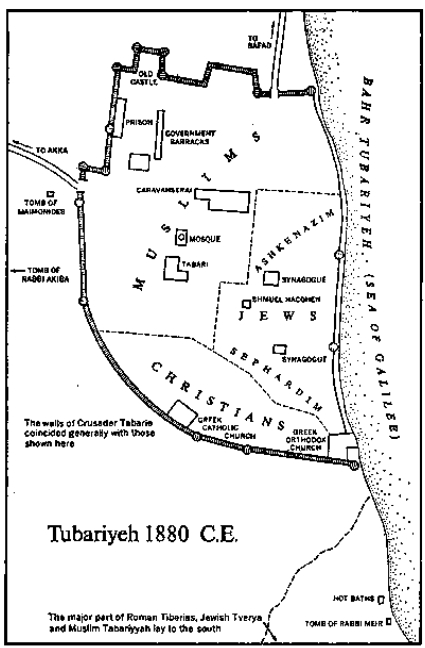

Turkish gold coin
Schematic sketch of a gold coin issued by the Fatimid Dynasty of Egypt. Original reads in part—Obverse: “In the name of God, this dinar was struck at Tiberias 395 A.H. (1004 CE.). Ali al-Mansur Abu Ali being Imam. Al-Hakim hi Amr-Allah being Commander of the Faithful.” Reverse: “There is no God except Allah alone. He has no partner. [This phrase was included to irritate Christians.] Muhammad is the Apostle of God, sent with instructions to demonstrate the true faith in its entirety, even though the pagans hated this. Ali is the friend of Allah” It was this Caliph al-Hakim who ordered the destruction of the Christian Church of the Holy Sepulchre in Jerusalem in 100g, thus initiating the series of events that culminated in the Crusades. Deposited at Makor August 21, 1880 C.E., sometime after six o’clock in the afternoon.
It was hot in Tiberias, both within the city and without. A blazing sun beat down upon the molten surface of the lake and hammered at the barren hills like a great torch seeking to set the world afire. Inside the massive black walls of the town the heat was more than a man could bear, so that during the suffocating hours of midday few could be seen in the narrow alleys, down which ran open sewers throwing a hideous stench.
Tiberias was the earth’s lowest settlement, cowering more than six hundred and eighty feet below the level of the sea, and in this torrid summer of 1880 it was also one of the world’s most miserable communities, a somnolent, cramped and dirty little town overburdened with filth and fleas. In the remorseless sun it dozed as if ashamed to show its face to the world.
Legend of the countryside claimed that the king of insects held court in Tiberias and hither summoned his subjects each summer to devise new means of tormenting human beings, their shrewd inventions being first tried out on the citizens of this wretched town. Certainly something in the hot, low place was conducive to the breeding of insects, for each house was alive with fleas and scorpions and bedbugs.
For nearly a thousand years Tiberias had been the butt of jokes, because as early as 985 an Arab traveler, forced against his will to spend some time in the town, reported to his friends: “For two months in the year the citizens gorge themselves upon the fruit of the jujube bush, which grows wild and costs them nothing. For two months they struggle with the numerous flies that are rife there. For two months they go about naked because of the fierce heat. For two months they play the flute, for they suck pieces of sugar cane which resemble flutes. For two months they wallow in mud, for the rains soak their streets, and for the last two months they dance in their beds because of the legions of fleas with which they are infested.” The people of Tiberias enjoyed a reputation no more favorable than that of their insects. A drowsy, undistinguished lot, they drifted through the years with no accomplishments, and a stranger, looking at their town in its present condition, could not have recognized the once-proud city of the Herods nor the center of learning from which the Talmud and the written Bible were given to the world. It would have been impossible to imagine that within these walls a Crusader court had once held sway, for now only a few Arabs huddled in their district, a few Jews in theirs, the Sephardim remaining strictly aloof from the Ashkenazim while a handful of Christians clung to the southern edge of the town, and on stifling days like this, when the thermometer on the kaimakam’s balcony stood at 124 degrees and when no breeze came from any quarter, the citizens of Tiberias lay panting in their beds, hoping that the night would bring relief.
In this flea-bitten town only one man was cool. In an underground room perched over a cellar which had been packed during the winter with ice lugged down from the mountains, a handsome, portly man in his early forties reclined in a bamboo chair, his fat feet higher than his belly and a wet towel about his head. He was naked except for a small breech-clout and he was drinking grape juice into which had been placed chips of ice from the cellar below.
Even so, this amiable man with the long mustaches was sweating, not because of the heat, but because of intricate and dangerous plans in which he was involved. Two different groups of plaintiffs had petitioned him for exactly contrary decisions regarding a matter of land: the white-robed qadi and the red-faced mufti had joined forces to plead for one solution, while Shmuel Hacohen, a sway-backed Jew from Russia, sought an opposing judgment. And Faraj ibn Ahmed Tabari, the kaimakam of Tubariyeh, as Tiberias was now called, had devised a trick whereby he could extort baksheesh from each side while appeasing neither, and such a solution appealed to his sense of administration.
Tabari lay back in his chair and imagined the plaintiffs as they would stand before him in a few hours. The red-faced mufti would bluster: “As religious leader of the Muslims I demand.” The white-robed little qadi, afraid of his judgeship, would wheedle: “Excellency, I do think you should.” And Hacohen, a man of incorruptible determination, would stand with his left foot awkwardly forward and plead: “A boatload of Jews has landed at Akka.” And each would have in his pockets, to bolster his petition, a handful of gold coins, dependable, negotiable English sovereigns. It was the kind of situation the kaimakam could appreciate.
But the real reason he sweated was not this exacting duplicity regarding land nor the oppressive heat of this unbearable day. Governor Tabari was nervous because he felt himself being edged closer to that moment when he must take a stand regarding the future of the empire, and this he was afraid to do. Before the recent war the sultan had arbitrarily offered a constitution and the hearts of young men like Tabari had surged with hope; but just as arbitrarily the sultan had revoked the constitution and young men could see that despotism and tyranny were to be indefinitely prolonged. This was a matter on which men of character should take a stand, and Tabari, at forty-two, could logically place himself either with the young idealists or with the established officials who were satisfied with no change. Normally he would have procrastinated on a matter of such importance, but his brother-in-law was on his way from Istanbul to urge that Tabari side with the reformers who were planning a direct appeal for the restoration of law. Trying to decide which way to jump in such circumstances was enough to make a man sweat.
Kaimakam Tabari’s inability to make a decision should not be construed as defectiveness in character; one of the few Arabs permitted to attain high position within the Turkish administration, he had to be cautious where policy was concerned. In fact, his presence in government had been a fortunate accident and he would allow no mistakes to jeopardize it. Years ago, as a sharp-eyed Arab boy growing up in Tubariyeh, he had captivated the interest of the then kaimakam, a Turkish scholar of extraordinary quality who had invited young Faraj to play with his son and daughter, and who, in watching the Arab boy at games, had developed an insane passion for the youth.
Strange years had followed, in which Faraj traveled with the kaimakam from Safad to Akka to Beirut, thus acquiring his insight into Turkish administration; and then, as suddenly as the passion had arisen, it waned, and the kaimakam allowed Faraj to marry his daughter and arranged for him to attend the school for administrators in Istanbul. There Tabari had been a lone Arab in classes dominated by Greeks, Bulgars and Persians, and had learned with what contempt the Turkish rulers held all Arabs, those least and lowliest of the empire. He dedicated himself to proving what an Arab could accomplish and he so impressed his instructors that after graduation he was assigned to exploratory positions in Salonica, Edirne and Baghdad. It was to that latter city, in 1876, when he was thirty-eight and his strange father-in-law was dead, that his wife’s brother had come with exciting news: “Faraj! You’re being sent to Mecca. And if you can somehow get together baksheesh in the amount of six hundred Maria Theresas you’ll be allowed to buy the kaimakam’s office in Tubariyeh.”
At that stage in his career, with three children, Tabari had been able to accumulate through extortion, theft and bribery only two hundred Maria Theresas toward the purchase of his next appointment, so the secret offer posed a difficult problem, but his brother-in-law would accept no objections. “Get hold of the kaimakam’s office, one way or another,” he counseled, “for then you’ll be able to accomplish great things.” And for the first time Tabari listened to one of the young idealists explain what the Turkish empire might become. “Faraj! When you’re back in Tubariyeh you can open a school. Maybe a hospital. We have plans for a system of military service which will also teach peasants to read and write.” They had talked for many hours, at the end of which Tabari said, “I’ll find the money somehow,” and they had shaken hands, not as conspirators but as two men, one a Turk, one an Arab, who perceived the reforms that must overtake their tired old empire.
What Tabari did not know as he traveled south to Mecca was that the sultan’s men, seeking a new crop of officials who could be trusted to defend the old order, had selected him for preferment and were sending him there to see if an Arab with no funds could be relied upon to protect himself in an emergency. They found out. Within a month Faraj Tabari had set in motion an intricate plan which would enable him to steal twice four hundred Maria Theresas in less than a year, and all from impoverished Arabs who could not protest. It would not be wholly accurate to describe his manipulations as stealing; in those somnolent years the Turkish empire operated on the principle that each government employee ought to be able to put aside each year, in one manner or another, four times his official salary: one to pay baksheesh on the job he already held, one to pay for the job he wanted next, one to help his superior pay for his job, and one to hold back for emergencies. Any Turkish official who did not know how to extort, lie, squeeze, blackmail and defraud without creating scandal was obviously unqualified to help run the empire, and Faraj Tabari was ready to prove himself one of the best officials sent to Arabia in recent years.
He started by going down from Mecca to Jidda, where Muslim pilgrims arrived for their journeys to the holy places of Islam, and within a few days he initiated a system whereby each pilgrim was milked of an additional tax. All ships putting in at Jidda harbor were required to pay unexpected port duties, and when they protested, unanticipated difficulties arose which could be solved only by the payment of more baksheesh. Next the energetic young Arab saw to it that all caravans putting in at Mecca were taxed on their oil and dates, and transfers of land were inexplicably held up until fees of an unspecified nature were paid.
What was exceptional about Tabari’s operation was that he accomplished it with ease and even urbanity. Each underling who collected baksheesh for him was allowed to keep a portion for himself, while those in superior positions found themselves receiving unexpected contributions. Maneuvering as if he had headed governments for years, Tabari won the respect of all, kept the friendship of most and certainly demonstrated that he was prepared for a command position within the empire.
When the six hundred Maria Theresas had been accumulated he took them to Istanbul, handing them to the official in charge of appointing kaimakams and then spending memorable weeks revisiting his school and forming those friendships which would control his destiny in the years ahead. His brother-in-law, who had insinuated himself into a good job, met him frequently at cafés along the Bosporus, with reports of progress among the younger men. “We have key positions in every department,” the enthusiastic reformer said. “When you get back to Tubariyeh there will be so much to do.”
During his first weeks in Istanbul, Tabari was almost convinced that the younger men would succeed in forcing the promulgation of a new constitution and he felt strongly drawn to them, but in the fourth week a cab called for him and he was driven out along the Bosporus to the splendid Dolma Bagcheh Palace for an audience with the sultan, and he found Abdul Hamid, destined to be the greatest ruler of modern Turkey, to be a shrewd, calculating man, cruel in decision and obviously determined that his empire should not again be molested by constitutional reform. Tabari was one of several newly appointed kaimakams whom the sultan was receiving that afternoon and at one point the group moved to a dark room of the palace, where Abdul Hamid said, “In the old days, if one of our kaimakams betrayed his office, he was invited here for a consultation, and as he waited …” Abdul Hamid giggled, and in the ensuing silence a huge black eunuch slipped into the darkened room and caught Tabari by the neck. The other governors gasped, and Tabari could feel the slave’s fingers tightening about his throat. Then the Negro dropped his hands and everyone laughed nervously. Abdul Hamid added, “Without a trace the faithless ones were strangled and pitched into the Bosporus. Of course, today we no longer use such punishments.”
And so, properly instructed on how to rule an empire, Faraj ibn Ahmed Tabari, the most successful man yet produced by the Family of Ur, returned to govern his home town of Tubariyeh. He allowed no strife, visited his outlying districts faithfully and paid regular baksheesh to the mutasarrif in Akka and to the wali in Beirut. Furthermore, as a result of insistent pressure on everyone who did business with him, he was able each month to put aside a sum of money toward the purchase of his next job, which ought to be of such importance that he could steal enough to retire on. When that time came he planned to return to Tubariyeh and buy a portion of the town for himself.
For he loved the grubby little settlement in which he had been reared. Even when serving in remote districts he had been able to recall the snow-capped mountain to the north, the lights of Safad nestling in the hills and the beauty of the lake. The quality of government he gave Tubariyeh was by no means inferior, if judged by the standards of the area, say, from India to Morocco, for he kept his people happy. He initiated no oppression and allowed each minority, like the Christian or the Jewish, to govern itself in matters concerning religion and family life. He supervised a rough justice and maintained civil peace in which the tedious years could pass with no disruptions and little change. Throughout the east thousands of people lived under conditions far worse than those provided by Governor Tabari, and if along the lake there were no schools, if women of all creeds lived like animals, it was simply that no alternatives had been suggested. During the two years he had sat in his office staring out at the barren hills of the Galilee, it had not once occurred to him that the reforms spoken of by the eager young men in Istanbul could be applied here if only he would spend a little energy upon them. When he saw the barren fields he did not understand that they could be otherwise or that they ever had been so. He lived beside a lake which contained some of the finest fish in Asia, a lake which had once fed multitudes even without the miracle of Jesus, yet he never thought it strange that contemporary Tubariyeh had no boat and no food from that plentiful reservoir that stood right at the edge of town. It did not occur to him that it might be a good idea to purchase a boat somewhere and bring it to the lake so that the citizens of Tubariyeh could again enjoy fish. The last vessel to sail that lake had rotted away four hundred years before, and where there had once been fleets of a hundred and two hundred craft there was now not even a rowboat. On the edge of plenty his people starved, and he could not visualize a solution.
“My job,” he once explained to the wali in Akka, “is to maintain order and to watch at night lest the Bedouins attack the walls.”
Kaimakam Tabari had one simple rule of administration, and it was understood by his subjects: In Tubariyeh positively everything was for sale. If an Arab youth was summoned to military service it was obvious that there was no possible escape; but if his father paid the kaimakam enough, he could escape. Alien Jews were forbidden under the most severe penalties reaching almost to death from owning land in Arab areas; but if the Jew could get together enough baksheesh he could buy the land. When the qadi found a man guilty, it was arranged between the qadi and the kaimakam that the former would impose an excessive sentence; then the guilty man could appeal to the latter, and if he had enough money to pay the baksheesh he went free. For the issuance of the simplest government paper, an established scale of bribes was in force, and in either the civil court of the qadi or the religious court of the mufti any decision that was wanted could be had by paying the proper baksheesh to the kaimakam.
Of course, the income thus gained was by no means all his. He was generous in paying off his subordinates and in splitting fees with the qadi and the mufti. Furthermore, he had to send regular bribes to Akka and Beirut. As a result of this constant drain on the people of Tubariyeh, there was no money left for schools, or sewers, or water supply, or a jail in which a human being could survive. There were no hospitals, no adequate policing, no fire-fighting and no roads. There was the wall, and this kept out the Bedouins, and there was the smiling, amiable kaimakam who made things as easy as possible for his people.
For such a system of general bribery to work, there had to be relative honesty among the principals, but recently the kaimakam had found that the red-faced mufti was cheating on baksheesh and undermining him in Akka. Such behavior was not surprising, for Tabari’s brother-in-law had warned him that Arabs like the qadi and the mufti would be unhappy with a fellow Arab for kaimakam: “They’d prefer outsiders. A Bulgarian, for example. They would fear him and know where they stood.” As usual, the young man proved right, and as this hot day drew to a close Tabari resolved to settle matters with the mufti. He finished his grape juice, wiped his body for the last time and donned the Turkish uniform in which he conducted the business of government.
From behind a curtain on the second floor of his home he spied with fatherly interest upon the life that began to move once more through the alleys of his town. Muslim shopkeepers lounged at the doors of their shops. An old Jew passed through the market, seeking rags, while through the entrance of the synagogue other Jews passed to resume their study of Talmud. A Christian missionary, unable to convert either Muslim or Jew, walked in perplexity beside the lake, wondering what secret power Jesus and Paul had possessed that they could unlock hearts which were barred to him. Finally the kaimakam saw what he was looking for: from the door of the mufti’s house supped the little qadi, dressed in white and very nervous. Looking furtively in all directions the judge darted across the alley and started to walk in innocence toward the government buildings. After he was safely gone the portly mufti, dressed in black and with a red face on which his emotions could not be hidden, appeared from the same door and casually walked by different streets to the building where the meeting was to be held.
“They don’t want me to know they’ve been conspiring,” Tabari laughed. In a way he was pleased that they had been laying plans behind his back, and he was careful to give them time to reach his office, so that if necessary they could conspire further; for he judged that the more secure they felt, the better chance he had of squeezing from them a sizable chunk of baksheesh. This was contrary reasoning, for usually one would expect only a man alone and in desperation to offer real baksheesh; but Turkish administrators had discovered that it was men who felt sure of themselves, men who had substantial funds at their disposal, who paid for what they wanted. Such men could not be bullied, but they could be tricked.
Kaimakam Tabari put out his Turkish cigarette, adjusted his tarboosh, went in to kiss his wife, to whom he owed so much, and started his walk to the office. Arabs and Jews alike drew back to pay him respect, and he moved slowly, majestically past the mosque, but at the caravanserai, which occupied a central area, he paused to inquire whether the messenger had arrived from Akka with the dispatches from the mutasarrif, and he was disappointed to find that no horseman had come.
“If one does,” Tabari directed, “speed him to me,” and with this he could no longer delay facing his visitors, so with feigned eagerness he burst into his office, hurried up to the two conspirators and embraced them warmly.
“Good friends, be comfortable on this hot day.” He arranged chairs for them and asked, “Now what’s your problem?”
The little judge gaped. “Excellency! For two years we’ve been discussing our problem.”
“Of course,” Tabari agreed amiably. “But have we any new solutions?”
“What word from Akka?” the mufti asked bluntly.
“None.”
“Then you will make the decision?”
“Of course.”
“And what have you decided?”
“I am inclined toward your point of view.”
The hopeful qadi assumed that this meant victory and was obsequious in his praise: “Excellency, we knew in our hearts that a man of your wisdom …”
But the mufti, one of the ablest men in Tubariyeh, was better schooled in the tricks of Turkish administrators, and sought to pin Tabari down: “Can we rely upon your word?”
If the kaimakam was insulted by the mufti’s crudeness, he restrained himself by recalling his main objective: Today I want money from this man. Revenge can wait until tomorrow. He smiled blandly and said, “Of course you have my word.”
Again the qadi was delighted. “Then the Jew gets no land?” he asked.
“I didn’t exactly say that,” Tabari hedged.
“What did you say?” the mufti snapped.
Once more the governor stifled his anger. He thought: Sooner or later I must cut this man down. But not today. To the mufti he explained, “I said that I shared your opinions.”
“But what are you going to do about them?”
Tabari thought: Let the red-faced dog get madder. Then it will be easier to goad him for the money. He said easily, “What am I going to do? Exactly what you two gentlemen have recommended.”
The little qadi showed his relief that the uncertainty had been erased. “This is a memorable day, Excellency. Then the Jew gets no land?”
“Not under any possible circumstances,” the governor promised, and with a gesture of transparent honesty he threw his hands on the table, palms up, as if to say: “There you have the whole matter before you,”
The qadi laughed nervously, as if a burden had been lifted from him, but the dour mufti realized that the squeeze was on. Whenever a Turkish official used that ominous phrase, “under no possible circumstances,” every wise man knew that the matter was at last up for hard discussion and that the verdict would go to the claimant who paid the largest bribe. The mufti thought: Look at that damned Arab, waiting for me to make an offer that would seal the bargain. Well, he can wait.
Kaimakam Tabari did wait. He saw that the stupid qadi had missed the point, but he knew that the mufti had understood what was expected and was remaining silent in order to humiliate his superior. But the mufti controlled the money that Tabari wanted, so it was the kaimakam who had to swallow his pride and say, “I’ve been thinking”; and when he used this universal phrase of Turkish corruption even the dim-witted qadi knew what was up.
“I’ve been thinking,” Tabari repeated, “that since the three of us have agreed that the Jew should have no land, I’d better inform the mutasarrif in Akka.” The mufti, a willful man but one eager to protect his Muslims, looked at the slippery kaimakam with contempt, so again Tabari was forced to spell out the negotiation: “But for me to go to Akka will require money.”
“How much?” the mufti asked scornfully.
“Thirty English pounds,” Tabari said unflinchingly. When he saw the qadi blanch he added suavely, “I say English pounds because I know you stole more than forty from the last group of pilgrims to Capernaum.”
As the mufti glared at the governor his red face became nearly purple. It was infuriating, the mufti thought, to be treated in this manner by an Arab playing the role of a Turk. Moreover, if he did give Tabari the thirty pounds, little of it would reach Akka, and this idea spurred a crafty thought: Why not give Tabari the thirty pounds, wait for him to steal half, then inform the mutasarrif in Akka that Tabari had stolen from him? By such a trick he might get rid of Tabari altogether, and that would be worth thirty pounds.
The qadi was not equal to such duplicity. The best he could do was sell legal decisions to the highest bidder and then split with the kaimakam, and the concept of springing a trap as far away as Akka was quite beyond him. But the moral problem in the case before him was not; and to everyone’s surprise he turned to Tabari: “Kaimakam Tabari, it seems clear that if you allow the Jew to buy land outside the wall he will bring in other Jews to work that land, and if they succeed, still other Jews will follow them, and soon we poor Muslims…”He waved his hand futilely, as if trying to stem the inevitable.
“Oh, I agree with you thoroughly,” Tabari cried enthusiastically. “That’s why I do hope you can find the money for Akka.”
“Will the mutasarrif be qualified to make the decision?” the mufti asked, lured against his will into discussing the case on its merits.
“Of course!” Tabari said in all seriousness, but even as he spoke he reflected: Two years ago the papers were started on their way from Tubariyeh to Akka to Beirut to Istanbul. The decision has surely been made by now, and somewhere along that chain a firman from the sultan is headed this way. Now the European governments have been insisting upon more liberal land laws throughout the empire, and if the sultan grants privileges to Russians and Englishmen, he must do the same for the Jews. So if I want to get my baksheesh from the qadi and the mufti I’d better get it now, before they learn that the sultan’s decision has gone against them.
The mufti was speaking in a low growl: “Aren’t you afraid of having Jews buy land?”
“I am indeed,” the kaimakam replied with honest passion. “It would change everything. Open the gates for…” He didn’t know for what, but he suspected that the easy old days of accommodation and the quiet passage of years would vanish. He felt an honest sorrow, which he quickly suppressed, for time was passing and the firman might arrive at any moment without his having got the money.
“If we give you the thirty pounds?” the qadi asked plaintively.
“I’d work diligently to keep the Jews off the land.”
“And we could rely on this?” the qadi pleaded.
“You have my word of honor!” the kaimakam expostulated. “In fact, I’m riding to Akka tomorrow. I’ll hand the mutasarrif your money myself, and there’ll be no Jews in Tubariyeh.” To himself he reasoned: If the sultan’s decision is otherwise, I’ll insist I did my best to halt it.
This wily thought, as it came to him, must have betrayed its duplicity in some way, for the canny mufti, watching Tabari’s face, gasped to himself: That dirty swine! He already knows what the sultan decided and he’s trying to steal our money. Damn him! I’ll give him the money and strangle him with it. Tonight I’ll send a message to the mutasarrif telling him what’s happened. And before the week is passed, our friend Tabari will be in jail.
But now something of the mufti’s trickery betrayed itself to Tabari, who was well schooled in the basic rule of Turkish administration: When you have forced a man to pay a bribe, study him carefully to see how he plans to take his revenge. It became clear to Tabari that if his mufti paid the bribe he would do so in hatred and only because he saw some way of hurting the kaimakam. What could the mufti do to endanger me? Tabari asked himself. Only one thing. Pay the money to me, inform the mutasarrif that he’s done so, and count on me to keep the money for myself. Smiling genially at the red-faced religious leader, Tabari thought: You illegitimate pig. I’ll take your money and I’ll give every piaster to the mutasarrif, then tell him what a swine you really are. In two weeks you’ll be in Yemen.
Now the qadi and the mufti looked at each other in consultation, and the qadi delivered their decision: “We’ll give you the thirty pounds, Excellency.”
“To be used as you suggested,” the mufti growled. “For Akka.”
“Of course,” Governor Tabari cried pleasantly, and by great good fortune something inspired him to go to the two men and throw his arms about them, as if they were his friends, because at that moment an Egyptian servant appeared at the door behind them carrying a dispatch case; but because the governor gripped the two men tightly in an embrace, they could not turn to see the servant, and when they were able to do so he had disappeared on a signal from Tabari, taking whatever messages he had with him.
When the embrace ended Kaimakam Tabari cried to the servant, “Hassan, accompany the mufti to his home. He has a package for me.”
The Egyptian, his hands now empty, returned casually to the room. The mufti looked at him suspiciously and suggested, “I’ll bring the money over tomorrow.”
This called for Tabari to apply the second rule of Turkish administration: When a man agrees to a bribe don’t let him out of your sight till he delivers. He may reconsider. “You forget,” Tabari reminded the mufti, “I leave for Akka in the morning, and to be effective, your money should reach the mutasarrif promptly.”
The mufti bowed, extended his hand in friendship, then led the qadi from the room. As soon as they had parted from the governor the angry mufti drew the judge aside, so that the servant could not hear, and whispered, “Did you have the feeling that someone entered the room while the old bastard was embracing us?”
“I didn’t notice anything,” the bewildered qadi replied.
Suddenly the powerful mufti whipped about, caught the servant by the arm and demanded, “You just brought the kaimakam a dispatch from Akka, didn’t you?”
“No!” the startled Egyptian replied. In silence he accompanied the mufti to the latter’s home, where he checked and rechecked the thirty English pounds which the religious leader handed him.
At that moment Kaimakam Tabari was opening the dispatch case which the servant had been about to hand him a few minutes before. The routine papers Tabari laid aside, shuffling through the others until he found what he had suspected would be in the pouch. Hastily he took out the precious firman, inscribed in gold and sealed with red silk, and read:
The petition of the Jew Shmuel Hacohen of Tubariyeh to purchase land at the foot of Bahr Tubariyeh, said land now in possession of Emir Tewfik ibn Alafa, native of Damascus, is hereby granted. The further petition of Hacohen to purchase additional land giving direct access to the Bahr Tubariyeh and the River Jordan is hereby denied. Under no circumstances shall Jews be allowed to acquire land with water frontage.
As Kaimakam Tabari finished reading the firman he smiled, for it meant that the mufti’s bribe had been ineffectual even at the moment of being paid, and as an official of the Turkish empire he relished such sardonic contradictions. But now his servant entered with the thirty pounds and news that was less pleasing: outside in the waiting room stood the Jew, Shmuel Hacohen, eager to discuss with the kaimakam the land which he had for the past four years been trying vainly to purchase.

It was singular, John Cullinane thought, that twice in modern history the Jews had been saved by the Turks. It had happened in the sixteenth century when Turkey had offered the outcasts such refuges as Salonica, Constantinople and Safed; and it had been repeated in the nineteenth century when pogroms ravaged Poland and Russia. Why had it been the Muslim Turks who had salvaged the Jews when Christian nations tried to exterminate the religion from which they themselves had sprung? One might reason that Islam had been tolerant because it valued Old Testament traditions more highly than Christians did, for Muhammad had specifically directed tolerance toward Jews, while Christianity never did; but this was specious reasoning, and Cullinane dismissed it.
And why was it only the Jew whom the Turk tolerated? During the periods when the Turk was showing his greatest consideration to the Jew, he was at the same time persecuting the Druse and the Armenian, the Bulgarian and the Greek. The same kaimakam who on Monday aided the Jew, on Tuesday hung the Armenian, and on Wednesday shot the Greek.
It was necessary, Cullinane thought, to look outside the field of religion for an explanation, and when he did he found certain ideas which made sense. The Turk did not favor the Jew because he preferred him to the Christian; on the contrary, the Turk, like God, found the Jews to be a stiff-necked people, most difficult to manage. But the Jew stood alone and could be treated alone. He had no outside nation pressing to intervene on his behalf, and so long as he behaved himself reasonably well he was welcomed in Turkey and treated generously. This was not so with the Christians or the Arabs. With the former there was the constant threat that they might summon to the Holy Land nations like France, England or Russia to protect them; while with the Arabs there was the insidious possibility that they would somehow unite to throw off Turkish rule. Consequently, neither Christians nor Arabs were allowed freedom to expand.
At first glance, Cullinane thought, the situation seemed contradictory. One would normally argue that since the Jew was friendless he could be persecuted with impunity, whereas the Christian, surrounded by friends, had better not be touched. The Turks had reasoned otherwise: they did not wish to persecute anyone for his religious beliefs, but they did want to hold their shaky empire together and would tolerate no one who might in the future pose a threat to its continuance. Thus in Tubariyeh there was no possibility that the sickly ghetto students of the Talmud might one day coalesce into rebellion against the empire, whereas there was always the danger that the Arabs might do just that, so it was not illogical for a devout Muslim kaimakam to render decisions unfavorable to his mufti.
On the other hand, Cullinane learned that he must not interpret Muslim indifference to the Jews as constituting approval. The tragedy that was allowed to overtake Safad in 1834 was a classic example of Muslim administration, although in this instance it had been the invading Egyptians and not the Turks who were involved. On May 31, 1834, a sizable earthquake struck Safad, accompanied by much loss of property, and some weeks later word reached town that the Egyptian army was going to conscript Arab men. Superstitious Arabs concluded that some malign influence was working against them, and the Jews were blamed. The logical solution was to massacre them, which the Arabs started to do. For thirty-three unhampered days the Muslims were allowed to riot, destroying synagogues, killing rabbis and defacing over two hundred scrolls of the Torah, each worth more than a man’s home. The remnants of the great Jewish settlement were driven into the countryside, where for more than a month they lived on grass and slaughtered sheep, after which the government came back, caught the Arab ringleaders and hanged thirteen of them.
This was the way the Turks ruled: Start no pogroms yourself, but if the Arabs went to massacre the Jews, let them; then sweep in and execute the Arabs. Thus each community lost its leaders and relative quiet was maintained. But certainly in this cynical system the Turk treated the Jew no worse than he did the Muslim.
To Cullinane this impartiality was not surprising. He had found that most people, in their study of history, evaluated religion as a rather more important political force than it was. In the abstract one might expect Catholic France and Catholic Spain to recognize common interests, but they rarely did. Once when Cullinane was inspecting a dig in Persia he developed the attractive idea that the Muslim religion would some day unify western Asia, but before he had time to perfect his theory he found that Muslim Afghanistan was an ally of Hindu India, but wanted to go to war with Muslim Pakistan, which was an ally of Buddhist China. A little later Muslim Egypt tried to destroy Muslim Arabia. Even more spectacular to anyone digging in Israel was the example of the Crusaders, who set forth as a Christian army but who found their first enemies in Catholic Hungary, in Orthodox Constantinople and among the Christian communities of Asia Minor.
Cullinane had learned not to expect Catholic Ireland and Catholic Spain to share common views, and he doubted that Muslim Turkey and Muslim Syria ever would, either. For religion was not a solid basis upon which to construct either a nation or a congeries of nations, and he could foresee the distant time when Pan-Arabism, not religion, would unite true Arab states like Syria, Iraq and Arabia, while surrounding non-Arabic states would go their historic ways: to the west Muslim Egypt would assume a position of leadership among the nations of Africa; to the east Muslim Iran would concentrate on Asia; while to the north Muslim Turkey would associate herself with the problems of Europe. Nationalism, not religion, would decide, and he often caught himself wondering whether the new state of Israel had been wise to commit herself so completely to one faith, no matter how ancient and deeply rooted in the local soil that faith might be. He was surprised at the power of religious parties in the government, at the religious emphasis in schools and at the fact that Israel, like Turkey of old, had handed civil problems like marriage and inheritance to religious courts composed of rabbis if one were Jewish, priests if one were Catholic, or ministers if one happened to be Protestant. As a good Christian he could not help concluding: This is where Byzantium was sixteen centuries ago. Why would a new nation of its own free will insist upon repeating such mistakes? He felt that one of these days he ought to ask Eliav about these matters, for apparently Jews felt that their religion contained special features which exempted it from errors which had overtaken other faiths.
* * * * *
Shmuel Hacohen wanted land. He had to have land. More than any other man in Palestine this sway-backed, hard-working Jew from Russia had to find land; and as twilight ended on this hot summer day he became desperate, for the same messenger who had brought the dispatches from Akka to Kaimakam Tabari had brought word to Hacohen that the first shipload of Jews from Europe had landed two days earlier at that port. Tomorrow they would begin marching to Tiberias, and unless there was land awaiting them Hacohen would face disaster.
Four years ago, when he first came to Tiberias, he had thought that buying land for a Jewish settlement would be a simple task, but months and years had slipped by in tantalizing negotiation, in bribery and confusion, and Hacohen found himself in 1880 no nearer to having acquired his acres than he had been in 1876. For example, two full years had elapsed since his last petition had been forwarded to Istanbul. How could any government postpone making such a decision for two whole years?
At six o’clock on this very hot day Shmuel sat in his miserable room, wondering what to do. He lived in a hut that marked the border between the Ashkenazi and Sephardi sections, and not even in the worst of Russia had he known such a room, for in Russia one had at least a floor and—if he tried hard enough—a freedom from bedbugs; but here in the hopeless filth of Tiberias there was nothing except old men studying the Talmud, women living their pointless lives like animals, and children growing each year in ignorance. It was a hideous perversion of the way a Jew ought to live in his homeland, and Shmuel Hacohen was morally outraged.
He groaned in the heat. Obviously he must again implore the kaimakam to release the land needed by the incoming Jews, but as he visualized the kaimakam he shook his head: I can’t understand him at all. He recognized that Tabari was corrupt beyond any standard existing in Russia, and he knew that the kaimakam intended to squeeze out of the Jews every piaster possible. He was also aware that Tabari used the mutasarrif in Akka and the wali in Beirut as convenient excuses for extracting additional baksheesh, but what Hacohen could not understand was the man’s apparent lack of any moral base from which to operate.
Shmuel was willing to concede that Kaimakam Tabari was at heart a good man; otherwise he could have played Jew against Arab, and Christian against both, generating rifts within the community as Russian governors did, but this Tabari refused to do. He handled each religious group in his community in the same corrupt manner, thus preserving a kind of happy-go-lucky peace, and after Hacohen’s experiences in Russia he knew how to appreciate such peace. In his homeland Hacohen had learned to work with men who were mostly good or mostly bad, and with such men he knew where he stood. But with Kaimakam Tabari the problem was more complex, for the man could never bring himself to announce forthrightly what was to be done. Even when Hacohen bought him off with many pounds, things could not be considered settled, for the next man who brought the kaimakam a few more pounds could buy him back the other way. Trying to purchase land through such a man was frustrating to the point of despair, and Shmuel Hacohen had reached that point.
In his steaming, filthy room, not fit for sheep or goats, the wiry little Jew pulled on his western clothes, jammed his feet into hot leather shoes and prepared to wrestle yet again with the slippery, smiling kaimakam. But this day was going to be different. He was determined to get land. He would get the land he had paid for or …
He did not finish the sentence, because even in his state of anxiety he knew that he had no weapon with which to threaten the amiable official. A Jew could not protest to Akka or go to Beirut. He must deal only with Kaimakam Tabari. Nor could a Jew, like a Frenchman, appeal to his ambassador for aid—because the Jew had no ambassador. All Shmuel Hacohen could do was to pay more baksheesh to Tabari, and then more, and then still more.
Consequently, on this last desperate day Hacohen knelt in the dust at the head of his mattress and rummaged among some stones, from which he withdrew his final cache of funds. He had nearly a thousand English pounds, the last of his money from Russia, and this must close the deal. He brushed his trousers and started for the door, then stopped, considered for a long time, and returned reluctantly to the foot of his bed, where he dug into the earthen floor, coming up at last with a beautiful, shining gold coin. He studied it with love and regret, concluding that on this day of judgment even that coin was expendable.
He had found the ancient piece on one of his first scouting trips along the southern end of Bahr Tubariyeh where he had stopped to kick at the soil to see if it was promising. When he uncovered a dark, rich earth, capable of yielding fine crops if properly farmed, he took a stick and continued digging as if the land were already his, and in so doing turned up this antique coin covered with Arabic writing. It was waiting for me, he told himself.
It had been Shmuel’s intention to spend this lucky coin toward the purchase of his own home in the new settlement, and he had resisted all temptations to waste it otherwise, but now he was trapped. He must have land for his Jews, and if this gold coin could help him get it, the coin would have to be spent.
Into his right pants pocket he put what little Turkish money he had left. Into his coat he put the roll of English bills. And into his left pants pocket, where he could feel its reassuring weight against his leg, he placed the gold coin. Putting on his Turkish fez he brushed his suit again and prayed, “God of Moses, lead me out of this wilderness.”
Shmuel Hacohen had been born Shmuel Kagan in the little village of Vodzh along the western boundary of Russia. His father was a thin, pious man who collected rents for Russian landlords, and Shmuel’s first argument came when he was nine: his orthodox father had forced him to wear soft curls dangling down beside his ears, the Hasidic mark of piety as demanded by the Bible, but young Shmuel, a sickly and sway-backed child who walked with his left shoulder thrust forward, was learning that boys with curls were apt to be set upon by the Russians, so, borrowing his mother’s scissors, he had shorn himself. At the time his mother said nothing, but when Kagan senior returned from collecting rents she burst into tears and Shmuel’s father took him into a darkened room, where he recited the terrifying admonition of Moses our Teacher: “‘If a man have a stubborn and rebellious son, which will not obey the voice of his father, or the voice of his mother, and that, when they have chastened him, will not hearken unto them: Then shall his father and his mother lay hold on him, and bring him out unto the elders of his city, and unto the gate of his place; And they shall say unto the elders of his city, This our son is stubborn and rebellious, he will not obey our voice; he is a glutton, and a drunkard. And all the men of his city shall stone him with stones, that he die.’ “His father had paused before adding, “You let your hair grow in curls.”
Shmuel had been impressed by his father’s threat, and was for some weeks haunted by a vision of the punishment recommended by the Torah, but even this failed to make him pliable to his father’s ideas. He refused to wear the curls. The conflict became intensified when his parents wanted him to enter the yeshiva to prepare himself for a lifetime of study, since they recognized that he was an able boy. Again Shmuel refused, for he had already decided to enter some kind of business.
“There’s no business nobler than studying Talmud,” Kagan said.
“It’s not for me.”
“Shmuel, listen. Each morning when I pass the synagogue I ask God to forgive me. That I’m collecting rents. For Gentiles. And not reading Talmud as I should.”
“Me, I want to work.”
The senior Kagan, knowing the disappointments that Jews faced in Russia, fearing the pogroms that were becoming frequent along the Polish border, said with certainty, “Son, you’re a weak boy with a swayed back. For a Jew like you there’s only one safe course. Study Talmud, Become a pious man. And trust in God.”
This reasoning the stubborn boy could not accept, so in their impasse father and son agreed to place their differences before the holy man of Vodzh and to abide by his decision. Accordingly, they left their home and walked along the muddy road until they reached the village pump, across from which stood a courtyard surrounded by a rambling wooden house. Hasidic Jews, with fur caps, long black gowns and side curls, clustered about the door, and through them Kagan led his son. Without knocking he entered the house, announcing, “Rebbe, we come seeking judgment.”
The saintly man before whom they stood scarcely seemed a religious leader. He was a tall, robust man in his forties, with a ruddy face, smiling eyes and a bushy black beard, a rabbi who loved dancing and the shout of folksongs; at weddings he would sometimes throw the bride on his massive shoulders and race about his courtyard, kicking his heels and bellowing marriage songs until his congregation cheered. If at midnight some wanted to halt the festivities, it was he who kept the musicians playing, and once when he was reprimanded for continuing a marriage celebration till dawn he said, “The Jews of Vodzh have neither carriages nor gold nor expensive wine. If we cannot be lavish with our dancing and our music, how can we celebrate?” And when his questioner remained quizzical, the big rebbe grabbed him and shook him, saying harshly, “Jacob! This bride has not the dishes to lay a table. All her life she will live in poverty, consoled only by the memory of this night when she was beautiful. For God’s sake, dance with her now, before the roosters make us finish.”
He was known simply as the Vodzher Rebbe, a Hasidic rabbi who alleviated the misery of his Jews by the joy of his religious experience. In Vodzh he maintained a court, which the rebbes of his family had conducted for three generations, a house in which transient Jews could find a place to sleep or local Jews a center for discussion. It was a holy place from which he dispensed justice among his people, who could not find it in the local courts. In all the villages of western Russia and eastern Poland the Vodzher Rebbe was recognized as one of the saints of Judaism, and often on Saturdays he would have at his table as many as fifty Jews from different communities who had come to hear wisdom from his lips, but what they usually heard was his lively voice singing old Jewish folksongs.
Across his left cheek he carried a scar which further detracted from an appearance of saintliness, but this was his badge of honor about which Hasidic Jews would speak for generations: “One Friday afternoon the woodcutter Pinhas ran to the Vodzher Rebbe, saying, ‘Poor Mendel! He does not have with what to make Shabbat.’ That winter our rebbe had no money, for he had given it all away. But the idea of a pious Jew unable to celebrate the coming of Queen Shabbat was too painful to bear, so he put on his fur cap and marched to the great house of the nobleman, saying, ‘Sir, your poor Jews of Vodzh have no money to make Shabbat. What can you give me?’ The nobleman was insulted by this interruption and with his sword cut the rebbe across the face. Without flinching the rebbe said, That blow was for me. Now what have you for the needy Jews?’ And in this brave manner he got the kopecks so that Mendel could make Shabbat.”
Now, as the Kagans stood before him, this huge saintly man smiled at the close-cropped boy and asked, “Shmuel Kagan, what have you been up to?”
“My son refuses to wear his curls,” the father complained. “He will not enter the yeshiva.”
“He won’t?” the rebbe asked.
“I want to work,” Shmuel replied.
The big rebbe threw back his head and laughed. “How many fathers in Vodzh would be happy if their lazy sons once said, ‘I want to work.’” He reached out and grabbed Shmuel, saying, “Sit on my lap, son,” and with one enormous hand he clutched the frail boy to him, rumpling his short hair with the other. “I noticed that you were running through the village like a lamb newly shorn.” At this witticism the Hasidim in the room laughed, as courtiers should, but the rebbe ignored them, saying to the boy, “Your father is right, Shmuel. Israel can’t exist without a fresh supply of new scholars each year. My own son is at the yeshiva, and he makes me proud. Your father would be proud if you were studying Talmud.” He hugged the boy and asked, “What’s the matter? No mind for studies?”
“I want to work,” Shmuel repeated.
“And so you shall!” the rebbe cried joyously. “Kagan, Israel needs not only scholars but practical men as well. Shave your hair, Shmuel. Go to the Russian schools. Go on to Germany and attend university. Do the wonderful things that Jews are capable of. But never forget your God.” He rose, and keeping the boy in his arms, began to dance, jumping up and down in one place so that his beard brushed across Shmuel’s face, and the Hasidim began clapping their hands. One by one stately men with long beards and side curls joined the dance, and the rebbe’s court echoed with shouts of praise as the holy men danced.
“We are dancing for Shmuel Kagan!” the rebbe cried. “For he is the child of God and in the world he is to do great things.” Toward the end of the long dance, when all were chanting and beating their hands, the big rebbe kissed Shmuel on the cheek and whispered, “You are the child of God, the son of Abraham.”
The dancing ended, and with reverence the big man placed Shmuel beside his father, to whom he said, “The paths to God are manifold.” Then, as if he were experiencing a visit from God, he clutched the boy to him and burst into tears, great animal-sobs coming from his beard as he mourned, “You will do all these things, child, but in them you will not find happiness. Nor you,” and he pointed to one of the visiting Hasidim. “Nor you. Nor you.” He returned to his chair and sat trembling like a child, for he had been allowed a vision of the tragedy that faced his Jews.
So Shmuel Kagan, with his father’s consent, avoided the yeshiva and went instead to the Russian school; he was a good student, but no small village like Vodzh could provide the funds to send a boy to university, so at the age of twenty he found a job as timber buyer for the government, and in this capacity traveled much of western Russia, a small Jew with an odd way of walking, who went from town to town, acquainting himself with the strange winds that were beginning to blow across that vast land. In Kiev he met young men who argued, “The only hope for the Jew is to join the socialist movement and build a new Russia in which he can find an honorable home.” In Berdichev he came upon a group who met in the home of a poet who insisted, “Jews will come into their own only when they return to Zion and build there a new state.” But at the end of each trip he returned to Vodzh, where he sat like a penitent in the court of the rebbe, listening as that bearded saint developed his view that the true salvation of the Jew could lie only in sanctity and the Talmud. To his surprise young Kagan found himself more attuned to the rebbe than to the voluble men in Kiev and Berdichev and he was always pleased when the spiritual leader ceased talking and began chanting some Hasidic song. Shmuel joined in, and the rebbe’s court would echo with their noisy voices: this was permanent, the joy that poor Jews could find in praising their God.
But at the rebbe’s court there was contradiction: although he himself relied solely upon the Talmud, he did not deny validity to men who thought they had found alternative routes for the Jews. One day in 1874, when Shmuel was twenty-eight, the rebbe surprised the young timber merchant by observing, “What the poet in Berdichev told you is correct. The day is coming when we Jews of Russia and Poland must combine with the Jews of Eretz Israel to build a new land for ourselves. We shall till the soil and work in cities like other men, and if I were younger I would elect this new life.”
That year Shmuel was further perplexed by the arrival in his father’s home of a bearded, unctuous middle-aged Jew named Lipschitz, who nodded to everyone, kept his mouth in a fixed smile and shook hands limply like a woman. He hiked from village to village through Russia, carrying with him a list of Jews who could be counted upon to give him lodging, and in Vodzh he had thrust himself upon the Kagans. “I am from Tiberias,” he announced. “Tiberias, in Eretz Israel, and I shall be living with you for a few days.” He made himself at home, ate voraciously, and visited all Jewish families, begging funds with which to support the Talmudic scholars of Tiberias.
Shmuel disliked Lipschitz and suspected that he was keeping much of the money for himself, but the man’s mention of Eretz Israel so close upon the rebbe’s comments excited Shmuel’s imagination, so that while the guest fed himself Shmuel asked many questions. Between mouthfuls the visitor explained how the holy town nestled beside the Sea of Galilee, how Arabs dominated the town, how the Turks governed, and how the Jews lived.
“What work do they do?” Shmuel asked.
Astonished, Lipschitz replied, “They study.”
“All of them?”
“Yes,” and he recited the Jewish legend which said that on the day when holy men no longer studied the Talmud in Safad and Tiberias, Judaism would perish. “You give your money in Vodzh so that the Mes siah can be protected in Tiberias,” he explained, but Shmuel thought tha much of what he said was nonsense.
In succeeding months the young timber merchant spent many nights talking with his rebbe, who picked his way like an agile deer through the complexities Shmuel was encountering: “Joining a revolution I could not approve, for when the new Russia comes, you and I will still be Jews and our position will not have been improved. Emigrating to Eretz Israel might be right for you, with your energy, but it would be wrong for most of my court. Holding fast to ancient Jewish custom is still our salvation.” As the big man talked, Shmuel acquired his understanding of what Jewish rectitude meant. There was a right way to perform any act and a wrong way, and honest men clung to the former. Each aspect of business life had its moral tradition, which to ignore meant distress. Human relationships were governed by inherited law, which in the long run proved just. At times the rebbe experienced a mystical apprehension of the future, for in late 1874 he warned Shmuel, “One day our Jews in Poland and Russia will again face the days of Czmielnicki. I’m too old to escape. I’ll stay here and help my court survive whatever strikes. But others should ponder the future and act upon it.”
One warm spring evening in 1875 Shmuel discovered what his rebbe had meant, for in a nearby village a casual group of Russian peasants were sitting at an inn getting happily drunk after the day’s planting, and as the sun set, a sense of moroseness overcame one of the farmers and he observed, with no intention of harm, “Every kopeck I get falls into the hands of some Jew.”
“That’s right,” a second farmer said. “Either we give them to Kagan for rent or to Lieb for vodka.”
The farmers turned as a body to study their Jewish host, and Lieb, recognizing the look, began to put away the glassware. He signaled his son.
“Lieb,” the first farmer shouted, “what do you do with our money?”
“I run this place only for the landlord,” Lieb said apologetically, hiding his employer’s money.
“And Kagan?” the second farmer asked. “What does he do with our money?”
“Like me. Gives it to the landlord.”
The men had to admit that Lieb was right, and the second farmer said, “You Jews are as bad off as we are,” and Lieb breathed easier.
But then the first farmer said idly, as if reflecting upon some critical event in his life, “Jerusalem is lost.”
Like a spark this mournful observation lit up the eyes of the half-drunk peasants. A man who had not spoken repeated, “Jerusalem is lost.”
There was a long moment of hesitation, during which Lieb the innkeeper prayed while the sun went down. The farmers watched it go, waiting. The signal came from a youth, drunker than the others, who uttered the fatal word, that hateful word which once pronounced could never be recalled.
“Hep,” he said quietly, and Lieb turned white with fear.
“Hep,” the first farmer repeated as Lieb looked to see if he could reach the door.
“Hep!” the peasants began to chant, and villagers hearing the ominous word began boarding up their windows. Lieb, with panic on his face, shrank into a corner among the bottles.
“Hep!” the drinkers repeated, and of a sudden the young man leaped from his chair, flung himself upon the bar, sliding down to where he faced the innkeeper. Grabbing a knife from a leg of meat he threw himself upon the white-faced Jew and cut his throat.
“Hep!” roared the growing crowd as it surged toward the Jewish section of the village, bellowing the ancient cry of the pogrom: “Hep!” Hierosolyma est perdita. And somehow the fact that Jerusalem was lost, a distant city which they did not know, became an excuse for murdering Jews. If any people in the world had a right to mourn the loss of that sacred city to Islam it was the Jews, but its surrender was used as a reason for exterminating them.
There were some in the crowd who recognized the irrelevancy of their cry and these substituted another of equal potency: “The Zhid crucified our Lord.” But whichever cry was used, it fed the wild spirit of the pogrom and all united in the culminating wail, “Kill the Zhid.”
The peasants, having destroyed the ghetto of their own village, stormed into the countryside, gathering strength from every farm until they reached Vodzh, where someone screamed, “Let’s get the rent collector!” They rushed to the Kagan home, shouting with approval as a swordsman tore off the head of Shmuel’s father with one blow. They cheered again when the same sword slashed open the belly of the old woman. With axes and hoes the Christians gained revenge for the loss of Jerusalem, hacking to pieces four bearded Hasidim who were trying to reach the rebbe’s court.
The mob then stormed into the court, where they found the big man dancing ecstatically with nine of his steadfast friends. For a moment the peasants hesitated, unprepared for this strange scene of men cleansing their minds for death. But then a young drunk sprang at the rebbe, screaming, “He crucified Jesus, didn’t he?” And so the Vodzher Rebbe was slain, and his beard set on fire, and his body dragged through the streets to a spot where more than sixty children, women and old men were being slaughtered and tossed through the air like sheaves of harvested wheat. Jerusalem was lost, Christ was dead, and somehow the shedding of this Jewish blood consoled the bereaved peasants in their drunken sorrow.
Shmuel Kagan returned to Vodzh in time to bury his parents and his rebbe. That night he determined to quit Russia, for he understood at last that what the rebbe had said was true: “When the new Russia comes, you and I will still be Jews and our position will not have been improved.” A vision of Tiberias, beside its lake, grew strong in his mind and he spent the following days consulting with Jews, numbed by the inexplicable ferocity of their neighbors, and he collected from them funds for the purchase of community farm land at Tiberias. Finally he approached the Vodzher Rebbe’s son, now graduated from the yeshiva, and asked him to lead the exile, but the religious young man refused to leave the village of his ancestors. “I shall stay here and be the rebbe. Last week my father told me that pretty soon you would be going.” So the new rebbe prayed with Kagan and at the end they repeated the litany of all Jews in the Diaspora, “To next year in Jerusalem.”
When Shmuel reached Akka in 1876 he did not, like many Jewish immigrants, fall upon the ground to kiss the soil in which he would be buried, for he saw Palestine not as the end of life but as a beginning, and in this spirit he performed an act even more symbolic than kissing the soil: he dropped his Russian name Kagan and assumed its Hebraic original, Hacohen, and as Shmuel Hacohen —Samuel the Priest—he entered upon his new life.
His trip from Akka to Tiberias was an adventure in disillusionment, especially to one trained as a timber buyer, for both the Old Testament and the Talmud had taught him that Israel was a land heavy with trees: he found only bleakness. In the entire thirty miles from the Mediterranean to the Sea of Galilee, Shmuel Hacohen found only one small group of trees, the ancient olives at Makor, and he wondered who had destroyed the homeland of the Jews.
His apprehensions were increased when he reached the hillside where Rabbi Akiba lay buried, for from this eminence he looked down to see not the spacious marble-fronted Tiberias of the Romans nor the beautiful Tverya of the Talmud but mud-walled Tubariyeh of the Turks, a mean little town huddling within Crusader walls. What impressed him most, however, was the utter barrenness of the land; he could find no fields under cultivation, and he recalled the lush, dark loam of Russia. Doesn’t anybody down there farm? he asked himself, and when he descended to the town and entered the stone gates he found a desolation equal to the fields outside. It seemed to him that he was returning to the hatreds he had fled in Russia, for Turks ignored Arabs while Sephardi Jews did not speak with Ashkenazim. He tried to establish friendship with the latter group, many of whom were from Russia and Poland, but they rebuffed him as an intruder who might be trying to share in the charity they collected from Europe. When he explained that he did not want this charity, that he wanted to associate himself with those Jews who worked for a living, he found that what Lipschitz the collector had said in Vodzh was true: Jews in Tubariyeh did not work. To protect the sanctity of Jews in the rest of the world they spent their years reading Talmud, and had he tried to explain that he carried in his pocket funds for the purchase of farm land outside the walls, they would have considered him three times a liar: “No Jew has such money. Nor this one in particular. And if he had, to spend it on land outside the walls would be insane.”
On the afternoon of his arrival he started looking for tillable land, but none lay near the walls, so next morning he went to Capernaum, at the northern end of the lake, where he spotted extensive areas that would be acceptable, and all along the western shore of the lake he found other land that could be tilled. Back in his room, he dispatched an excited letter to Vodzh: “Here empty land is waiting which could be made as fine as any in Russia. I shall inform you as soon as I have completed my purchase.”
Two days later he hiked to the southern end of the lake, where the River Jordan begins its steep descent to the Dead Sea, and beside this bountiful river he found both the land he wanted and the ancient gold coin. After that first acquaintance he sought no other land; here the persecuted Jews of his village would build their farms and replant the vineyards that had lain vacant since the days of Rome. In his second letter to Vodzh he reported in Yiddish: “I have named our land Kfar Kerem, the village of the vineyards, and here we shall make wine, for did not Solomon himself sing, ‘Come, my beloved, let us go forth into the field; let us lodge in the villages. Let us get up early to the vineyards; let us see if the vine flourish, whether the tender grape appear…’ Start packing now.”
Shmuel found his land in February, 1876, but when he tried to buy it he encountered such confusion that he quickly warned his villagers: “You’d better not leave Vodzh until I find who owns our land.”
It took him eighteen months to discover this simple fact, and not until he had bribed three different officials was he allowed to know the owner’s address: “Emir Tewfik ibn Alafa, well known in Damascus,” but when he paid an Arab letter writer to send the emir a message, offering to pay a good fee for the idle land, he received a curt reply from a secretary: “Emir Tewfik has never seen this land, receives no rent from it, is not certain where it is located, and has no desire to sell.”
So in late 1877 Shmuel taught himself Arabic and walked to Damascus, where he tried for two months to see the landowner, but the emir refused to meet him. A tall dignitary in tarboosh and white robes explained, “Emir Tewfik ibn Alafa has never spoken to a Jew and has no intention of starting now.”
“But doesn’t he wish to make a profit on his land?”
“Emir Tewfik never buys or sells.”
“Doesn’t he care that the land is idle?”
“Emir Tewfik has thousands of acres of idle land. They are no concern of his.”
Shmuel was forced to leave Damascus without having seen the landlord and was about to decide that the enchanting fields could not be his, when on his way back to Tubariyeh he fell in with a delightful Arab, who advised, “Handle it through the kaimakam. For enough money he can do anything.”
“Even buy me the land?” Shmuel asked.
“Anything.”
So Hacohen spent the next three months learning Turkish, and in early 1878 presented himself at the kaimakam’s office, petitioning for an interview. To his surprise, the kaimakam, a tall, thin Turk in his seventies, admitted him and listened sympathetically to his problem. The situation was this: the kaimakam knew that in two months he was leaving Tubariyeh, but no one else did, least of all Shmuel Hacohen. So the governor teased the little Jew along, milked him of considerable baksheesh, and retired from active service without having written a single letter regarding the land purchase. When Hacohen discovered the duplicity he also found that the delightful Arab traveler who had suggested that he take his problem to the kaimakam was the latter’s cousin and had collected ten per cent of the baksheesh.
Shmuel’s disappointment was so great that he could not have continued in Tubariyeh, badgered by corrupt officials and outcast by the Jewish community, had he not in the spring of 1878 gone on a pilgrimage to Jerusalem; and while it was true that sight of this noble city on the hill inspired him with Jewish longing, its great stone blocks in the temple wall reminding him of the Vodzher Rebbe, it was not this spiritual adventure which was to sustain him. In Jerusalem he encountered something more significant than racial memories: he met young Jews from Russia and Poland who were convinced that Jews had a chance of one day controlling their homeland; he met others who predicted that in years to come the Jews of Israel would speak not Yiddish but Hebrew, “as the prophets spoke to us three thousand years ago”; he met businessmen who had started factories and others who were erecting houses outside the wall; and one night which he would long remember he met six young Jews who had begun to build a Jewish village near Jaffa.
“The Gate of Hope, we’re calling it,” they announced. “It’s to be the first of many.” One of the men turned to Shmuel. “You? From Tubariyeh? Are you starting any villages there?”
The men reminded him of the young Russians he had met in Kiev who were planning to rebuild that moribund nation, and of the poet in Berdichev who dreamed of a Jewish homeland; and as he discovered the vitality which these Jews had brought to Palestine he found new determination and replied, “When I get back to Tubariyeh I’m buying some land… Near the Sea of Galilee. We’re building a village there. Kfar Kerem.” And he returned to his hovel restored in his belief that he could do it.
In the summer of 1878 the new kaimakam, Faraj Tabari, took office, and when Shmuel reported his predecessor’s trickery in taking baksheesh for services never performed, the official laughed disarmingly and promised, “With me you’ll get the land,” and with these honeyed words Tabari had launched an agonizing period in Hacohen’s life. Postponements, lies, chicanery, these were the rule in Tubariyeh now, while in Russia the Jews of Vodzh, having concluded that Kagan had absconded with their funds, were making plans to arrive en masse in Akka. In frustration Hacohen went to the kaimakam and asked, “When can I get the land?” But Tabari merely stroked his mustache and said, “Mmmmmmmmm, on a matter as grave as this I’d better consult the mutasarrif in Akka,” and Shmuel understood that this would require more money. To approach the wali in Beirut would cost much more, while a letter to the sultan in Istanbul was prohibitive.
At the end of 1879, improbable as it seemed, Hacohen, this inconspicuous Jew from Vodzh, had seven different officials of the Turkish empire in his employ, one way or another, but the land was not yet his. By applying constant pressure and bribes whose number he had lost count of, Shmuel had advanced his case to a point where Emir Tewfik in Damascus was willing to sell the useless acres for the not exorbitant sum of nine hundred and eighty English pounds, but the baksheesh required to reach this agreement already totaled more than seventeen hundred pounds. And still the Turkish government would announce no decision.
Yet Hacohen did not lose faith in Kaimakam Tabari, for in a curious manner the thieving Arab had demonstrated an unquestioned friendship for the Russian Jew. One night, as Shmuel sat in his filthy room wondering whether or not to abandon Tubariyeh, he heard muffled footsteps on the cobblestones and intuitively checked to see that the places where he had hidden his money were secure. He had barely done so when his door burst open and eight Jews in fur caps, side curls and long coats rushed at him, pinioned his arms and dragged him off to a rabbinical court convened in the Ashkenazi section of town.
It was a gloomy, portentous scene, with three rabbis waiting to judge the prisoner. In Yiddish the charges against Hacohen were read: “He is not a part of our community. He does not observe our laws strictly nor does he study at the synagogue. He has been heard speaking against Lipschitz, who knew him as a suspicious one in Vodzh, and he disturbs the district with his folly about land purchases and Jews working as farmers.” As the preposterous phrases rolled forth Shmuel thought: The real charge they don’t make. That I endanger their way of life.
Then came the sentence, incredible for the year 1880, but made possible by the Turkish custom of allowing each religious community to govern itself: “Shmuel Hacohen is to be fined to the amount of his possessions. He is to be stripped, stoned and banished from Tubariyeh, and may he leave Eretz Israel without further disturbing the ways of Judaism.” Before Shmuel could protest, the first provisions of the sentence were carried out.
Jewish men who had come to fear the little Russian who lived outside their narrow world laid hands on him and stripped away his clothing until he stood naked. Pockets in his torn garments were searched for money, which was handed to the court, after which he was hauled to a corner of the wall, where the general population began hurling rocks at him, not caring whether they blinded him or killed him, and he might have died except that one of the rabbinical judges interceded and the bleeding prisoner was dragged to the main gate of town and thrown outside the walls. The mob then proceeded to his hovel, where they started digging up the floor to find any gold he might have hidden.
It was at this point that Kaimakam Tabari interfered. His gendarmerie, hearing that a Jewish punishment was under way, had paid no attention, for this was a matter concerning one of the religious communities, and how they disciplined their people was not a governmental concern; but word of the unusually harsh sentence reached Tabari: “Did you say Hacohen? The Jew from Russia?” When he knew that it was the little land buyer who was being stoned he summoned his guard and went to the town gate, where torches showed the naked and bleeding Jew wandering vainly outside the walls.
“Take him home,” Tabari ordered. “You, you and you, give him your clothes.” When gendarmes reported that officers of the rabbinical court were wrecking Shmuel’s hut, Tabari hurried there and said to the mob, “Go home, all of you.”
As Shmuel regained his mournful room he saw with gratitude that the searchers had not reached the money intended for the purchase of his land. He fell on his mattress, too bewildered to cry. The sentence of the court had been so unexpected, the punishment so harsh, that he was content to have escaped with his life, and as for the kaimakam’s intervention, this Shmuel could not explain, but as he wiped his sores with a dirty cloth he asked himself: Did he keep me alive only so that he could rob me of what I have left? The thought was unworthy, for Shmuel could remember that as he had stood naked outside the walls the torches had shown him the kaimakam’s face, and it was that of a man who could not tolerate such punishments. If in the forthcoming months Tabari stole all of Hacohen’s savings, this would not alter the fact that tonight he had acted as one human being toward another. Why had he done so? Shmuel fell asleep before he found an answer, but Faraj Tabari, sitting alone in his room overlooking the mosque, asked himself the same question and replied: He was little and he had a swayed back, but he looked like my brother-in-law, so I had to save him. And for the first time the kaimakam expressed the hope that his brother-in-law might soon visit Tubariyeh to explain which of the new ideas could be put into practice here.
The next days Shmuel would not remember. In a daze of pain from the stoning by which Eretz Israel had rejected him, its mountains falling upon him in his nightmares, he lay upon his mattress while insects came to inspect his wounds. Each of the Jewish communities left him alone, the superstitious Sephardim viewing him as a curse and the vengeful Ashkenazim hoping that he would die. By tradition Arabs did not come into the quarter where he lay, so his fever and nightmare were allowed to run their course and for two days of delirium Shmuel imagined that he was back in Vodzh, through whose cool lanes he went seeking timber.
When he recovered, unaided by anyone, he went into the alley to buy food, but the stares he met from the Jews were so hateful that he retreated to his hovel more wounded than he had been by the rocks. Was he wrong? Was it impossible to bring European Jews to this district and with them to build a new way of life, independent of charity? Weak though he was, he said to himself: It can be done! And he went back into the streets of Tubariyeh determined to resist his tormentors, but when he saw the bearded faces staring at him, waiting till they could catch him away from the kaimakam’s protection, he returned to his hovel and whispered, “God of Moses, I can accomplish nothing in this evil town.” And he prepared to flee.
From the earthen floor he dug up his money, and in the ill-fitting clothes which the kaimakam had forced his tormentors to give him he slipped out of town. Children saw him going and ran to tell their fathers, who left their studies to taunt the fugitive as he headed toward the north. At Safad he found conditions even more repellent than in Tubariyeh: old, suspicious Jews huddled over their Talmuds while young men took to robbery; the spiritual glory of the hilltop town was not even remembered. He left it behind and climbed over the hills that lay to the west, and what he found there saved him for the work he was destined to accomplish, for one evening as he wandered across a barren hillock, where he knew that trees must once have flourished, he came upon a little settlement that changed his perspective on what Jews could do in Israel.
It was Peqiin, at first sight merely another mountain village with narrow paths clustering about a central well and a synagogue hidden in a distant quarter, but when Shmuel came to know the place better he found it had distinguishing characteristics. For one thing, the Jews of Peqiin did not stay in their synagogue reading Talmud, for they were so remote from centers like Safad and Tubariyeh that no European charity reached them; they grew crops or they starved, and Shmuel found their fields in excellent condition. Nor did the Jews of Peqiin hide behind a wall, lest the Bedouins attack; they lived in the open and set men with rifles to guard the mountain passes. Four times in the 1870s Bedouins had thought to ravage the settlement and had retreated with their dead. The Jews here were a sturdy lot and for many weeks Hacohen found refuge with them, working in their fields and repairing the lacerations of his mind.
But the principal quality of the village he did not discover till late. It was a long evening in spring, when grape arbors were showing promise of a good crop, and as he sat gossiping in the village square he remarked, “Jacob, you’ve never told me where you came from.”
“From Peqiin,” the farmer said.
“I mean your parents. What part of Europe?”
“From Peqiin,” the man repeated.
“No. I mean Russia? Poland? Lithuania?”
“I’m from Peqiin. Aaron’s the same. And Absalom.”
A look of astonishment came over Hacohen’s face, for he had never met Jews who were not from some place abroad. “Egypt or Spain?” he asked.
“We’re Jews,” Aaron said. “Our families never left this land.”
“But during the Diaspora?”
“The sons of Jacob went down into Egypt,” the Peqiin farmers explained, “but we didn’t. Nehemiah and Ezra lived in Babylonia, but not us.”
“Where did you go when the Romans drove us out?”
“We didn’t go.”
He could not believe that hidden in these hills the people of Peqiin had never fled: it was unreasonable, yet in persistent questioning he could find no Jew who remembered Russia, none who had returned with memories of Baghdad. These were Jews whose families had lived here for four thousand years, and the subservient habits of exile they had not acquired. One evening in July, when the men he was working with were at dinner, he walked upon the hills that had always known Jews, and as he did so the giant steps of the Vodzher Rebbe seemed to be striding along beside him: the huge and ghostly rebbe broke into a dance and once more gathered Shmuel to his arms. “You are the child of God, the son of Abraham,” the rebbe said. He kissed Hacohen the man as he had once kissed Kagan the boy, and cried to the hills, “You will gain your land, Shmuel, but in it you will find death.” With the rebbe’s words ringing in his ears, Hacohen went in and said good night to the Jews of Peqiin.
“I must go back to Tubariyeh,” he said.
“But why? If they stoned you?”
“To buy land.”
“You can buy land here, Shmuel.” They recognized him as a worker and wanted him to stay with them.
“My land is beside the lake,” he said, and when he reached Tubariyeh he found his hovel occupied by chickens. Chasing them away and turning his mattress over so that their manure would fall to earth, he dug a fresh hole at the head of the mattress and there he hid his English pounds, while at the foot he buried the gold coin. As soon as this was done he began applying pressure on the kaimakam, nor would he stop until he had bought his land where the River Jordan left the lake and vineyards could be planted.
It was with the memory of these lonely and frustrating years, plus the present knowledge that the Jews from Vodzh were already in Akka, that Shmuel began his march on this hot afternoon to face the kaimakam in a final effort to buy the land. As he walked through the streets where Jews ignored him, he was not an impressive figure. Even when wearing his tarboosh he was only five feet four inches tall, and his borrowed clothes hung awkwardly. His pants were too short and his shoes creaked from their country tramping. He was still a sway-back, so that his belly moved ahead of him down the alleys, and he walked with his left shoulder forward as if he were trying to edge his way through life. He smelled of the evil room in which he was forced to live and he had suffered so many disappointments that he was beginning to look like the furtive Jews who scuttled through back alleys in cities like Kiev and Gretz; but these appearances were only outward, for his mind had found a kind of peace: at Peqiin, Jews had proved they could live on the land and could make it prosper. Bedouin raiders could be kept off with guns, and he marched through Tubariyeh determined to come away from this final meeting as the owner of land.
The kaimakam, who had hoped to postpone seeing Shmuel until he had perfected his plan for mulcting him of additional baksheesh, now that the firman had been promulgated, disarmed Hacohen by meeting him at the door of his office as if he were a friend and asking pleasantly, “Why do you come out on a day as hot as this?”
“Did the firman arrive from Istanbul?”
“Not yet, Shmuel,” Tabari lied. Then, seeing Hacohen’s shiver of despair, he added, “These things take time, Shmuel. There’s the mutasarrif in Akka, and the wali …”
“I know!” Hacohen snapped, almost losing his temper. “Excuse me, Excellency. I’ve had disturbing news from Akka.”
Kaimakam Tabari became suspicious, reasoning to himself: I know the Jews have arrived, but Hacohen doesn’t know I know. So why does he tell me something that makes his position weaker? He must be doing it for a reason. Probably plans to throw himself on my mercy. To Shmuel he said, “Now what could possibly happen in Akka that would be bad news? You know the mutasarrif’s on your side.”
“The Jews who are buying the land… they’ve landed.”
When Shmuel said this the kaimakam allowed his face to form a scowl. “They have? This is serious, Shmuel.” He waited to see what approach the Jew would take.
He had guessed right. Without replying Hacohen reached into his coat pocket and produced a roll of bills. Pushing them to Tabari he said, “Nine hundred and eighty pounds. For Emir Tewfik in Damascus.” The kaimakam did not touch the money, but watched carefully as his visitor continued to unload his right pants pocket. Out came a few paltry coins, some foreign bills, the kind of bribe a desperate man would offer for the recovery of a horse. Tabari waited.
“Excellency, this is every piaster I have in the world. Take it, but let me have the land.”
“This is a grave thing you suggest,” Tabari replied. “You want me to authorize the Jews to settle on the land before we hear from Istanbul. If I did that I could lose my job, my reputation.” He paused to let Shmuel study the matter, then added softly, “If we could wait a few months…”
Again Hacohen pushed the money at the kaimakam and said with passion, “If they come here and find they’ve been cheated, they’ll kill me.”
Kaimakam Tabari leaned back and laughed in a consoling manner. “Shmuel, Jews don’t kill other Jews! They might abuse you or ostracize you, but even that other night they didn’t kill you.” He felt sure that Hacohen controlled more money, somewhere, and he intended getting it. He stood up and moved a chair closer to his desk. “Sit down, Shmuel.”
This gesture astonished Hacohen. Never during his four years in Tubariyeh had he been allowed to sit in a kaimakam’s presence and he became doubly cautious. Tabari was saying, “I’ve been meaning to ask you for some time, Shmuel. What about the Bedouins? The raids? That is, supposing your people do get their land.” The kaimakam caught himself. “I mean, supposing we can work something out.”
Hacohen tried not to betray his feelings. The firman from Istanbul had arrived! He knew it from the way the kaimakam was acting. The Jews were going to get their land! He deduced what had happened. The messenger who had brought him news of the landings in Akka had at the same time brought Kaimakam Tabari the firman. Speaking very slowly, because he could not guess what Tabari would propose next, Shmuel said, “At Peqiin I discovered how to handle the Bedouins. First you offer to buy their friendship. And if you fail, you take a gun and fight.”
“Fight?” the amiable kaimakam laughed. “Shmuel, your bunch of pale scholars? Fight men of the desert?”
“There’s nothing else we can do, Excellency. In Europe, in Spain, we didn’t fight and we were burned alive. Here at Tubariyeh we’ll fight. But I don’t think we’ll have to.” He thought of the resolute farmers in Peqiin; for three years there had been no attacks.
The kaimakam smiled indulgently and asked, “I suppose the newcomers are all Ashkenazim?” With his fingers he drew curls down his cheeks. “They don’t seem like fighters to me.”
“You’ve seen only one kind of Ashkenazi, Excellency.”
“I’d be pleased to meet some other kind,” the kaimakam joked. “The Ashkenazim we see here in Tubariyeh… Mean, little-minded. Now the Sephardim, on the other hand…”
Hacohen had no intention of allowing Tabari to sidetrack the main issue. Istanbul had granted the Jews their land and its transfer must not be delayed. He tried to bring the discussion back to that point, but Tabari rambled on: “I’ve always preferred the Sephardim.”
Hacohen thought: Regardless of what the kaimakam thinks he sees here in Tubariyeh, the future of the Jew lies with the Ashkenazim. It’ll be the hard, dedicated men with German educations and Russian determination who’ll determine the future. Let my friends in Akka get hold of their land, and we’ll see. To the kaimakam he said quietly, “The Sephardim are more pleasant to know.”
“Yes!” Tabari agreed. “In Tubariyeh every Jew I respect is a Sephardi.” He corrected himself. “Everyone but you, Shmuel.”
There followed an awkward silence, for obviously the kaimakam was leading to something, but what it was Hacohen could not guess. He waited, and Tabari added, “So what with the newcomers all being Ashkenazim, whom I don’t like anyway, why should I risk my position?”
“It’s all the money I have,” Hacohen insisted stubbornly.
Kaimakam Tabari looked hurt. “I didn’t want more money from you, Shmuel. It’s just that we have to have more funds from somewhere to buy the right judgment in Istanbul.”
It was a moment of hard decision. Shmuel could feel the gold coin pressing against his leg and he was tempted to bang it onto the table as a last wild gesture; but he had learned in these matters to trust his intuitive judgment, and this reassured him that the firman was already in Tubariyeh and that he need only be insistent. He therefore held back the coin and waited.
Finally Tabari spoke. “So what I thought was”—there was the horrible phrase again—“that if you could give me the names of the leaders of your group now in Akka, when I go there tomorrow I can see them and explain the gravity of the situation …”
From a cesspool of disgust Shmuel Hacohen looked at the kaimakam, and each man was aware of what the other was thinking. The Jew thought: He’ll go to the ship with an interpreter, some tough from the Akka waterfront, and they’ll confuse and bully the immigrants. The Jews will think he’s threatening their land and they’ll surrender every kopeck they have. The bastard. The bastard.
But Hacohen was wrong about what the kaimakam was thinking, for Tabari was saying to himself: This bewildered Jew. He thinks I’m doing this merely to tantalize him. Extortion. He doesn’t realize that right now I’m being the best friend he ever had. I’d better show him.
“You won’t give me the names?” he snapped.
“Find them yourself. Steal from the immigrants in your own way.”
“Stupid!” the kaimakam cried. With anger he took from his desk the firman and slammed it on the table. “Read that, you stubborn Jew.”
“I can speak Turkish. I can’t read it.”
“Do you trust me to read it?” Tabari read the first part and watched Hacohen’s face start to break with tears of joy. Then he read the harsh final proviso about keeping the Jews from water and he saw dismay take the place of joy.
“Without water the land is nothing!” Hacohen protested.
“Obviously. That’s why I must have extra money.”
Hacohen thought: It’s a lie. It’s a lie. He wants the money for himself. Then he heard the kaimakam saying easily, “The fact is, I suspect the sultan had nothing to do with that last clause. Some friend of mine tacked it on to help me out.”
“What do you mean?”
“So that I could do just what I’m doing now. Get a little more money for myself… and give him half.”
The duplicity of what Tabari was saying was too much for Hacohen to absorb. In Russia government officials were cruel. But a man grew to understand them. In Turkish lands … His anxiety was too great and he started to laugh. The kaimakam joined him and explained jokingly, “So our position is this, Shmuel. I want you Jews to have your land, and the water too. I suppose the sultan feels the same way. But in view of that last clause I must interrogate Istanbul, and that takes …”
“Money?”
“A lot of money. More than you have left. Now, may I have the names?”
Feeling morally depleted by developments two and three times more devious than he could follow, Shmuel Hacohen took the kaimakam’s pen and wrote down the names of the Vodzher Jews who could be depended upon to get the money together, if they had any. As he penned their names the faces of his friends came before him: Mendel of Berdichev, with beard and fur cap; Solomon of Vodzh, an outspoken man; Jozadak of the next village, a fighter and a man who hated rabbis. As he finished recalling the names he dropped his head on the desk and wept.
Kaimakam Tabari appreciated the anxiety under which Shmuel had been working and he left him alone for some moments. Then he reached out and touched Shmuel on the shoulder, asking, “What good would the land be without water?”
“I wasn’t weeping for them,” Shmuel replied. “I was thinking of those who are dead and will not see the land.”
Then began a curious negotiation, an exchange that neither Kaimakam Tabari nor Shmuel Hacohen would ever forget. Tabari was convinced that the tough little Jew had more money somewhere, reserved for an emergency, and he suspected that after the land was secured he would not see Hacohen again; one of his most fruitful sources of baksheesh would thus dry up, and he hated to see anyone come into his office with money and escape. So on the spur of the moment, without really thinking, he did the thing that he would never afterward forget.
He said, “By the way, Shmuel, I have something in the other room you might like to see.”
“What?”
“Come, look.” And the portly governor threw open a door and led Hacohen to a shelf on which stood a row of twenty-two tall books bound in leather and stamped in gold. Hacohen recognized them as a fine Lithuanian printing of the Talmud, for he had seen such books in Berdichev while collecting money for the land purchase; and when Tabari handed him a volume to inspect he opened the pages reverently and before him stood the glorious, singing Hebrew that his father had wanted him to study.
“What I’d like to know,” Tabari was saying, “is why this book has such an effect on Jews?”
Shmuel looked at the large pages—more than twenty inches tall and nearly fourteen wide. This was a book unlike those that a Muslim or a Christian would know, for each page was a separate work in itself, composed of six or eight distinct kinds of type, varying in size from very large to very small. The organization was unbelievable: in the center of the page would appear in bold type a short phrase, surrounded on all sides by blocks of different-sized type explaining and elaborating what the central phrase intended. Down margins would appear columns only three quarters of an inch wide, printed in minute letters. It was a jumble, a confusion, a thing of beauty, and no two pages were alike.
“What does it mean?” Tabari asked.
“Well, this bold sentence in the middle is an opinion handed down by the great Rabbi Akiba.”
“Who was he?” Tabari asked.
“A rabbi. He’s buried here in Tubariyeh.”
Tabari studied Akiba’s material, then pointed to one of the surrounding blocks of type. “What’s this one?”
“A judgment of Rabbi Meir, who came later. He’s also buried in Tubariyeh.”
“And this big block over there?”
“Greatest of them all. Maimonides of Egypt.” He studied the beautiful, complicated page and said, “Excellency, you’ve chosen a page most appropriate to Tubariyeh, for Maimonides is also buried here.” Then, to his dismay, he realized that Kaimakam Tabari wasn’t taking his discourse on the Talmud seriously, had not even wanted to know what the great Jewish book was about. Tabari had much earthier ideas in mind and in pursuit of them he slammed the big book closed and stared directly at his little guest. “Shmuel, will you have a synagogue in your new settlement?”
“Yes.”
“Well, wouldn’t a set of the Talmud like this… real leather. Wouldn’t that be a great thing to give the new synagogue?”
At first Hacohen thought that Tabari, in gratitude for the baksheesh he would extract from the Jews, was proposing to give the newcomers this expensive gift of books, and the little Jew almost made an ass of himself. He started to express his gratitude, then caught himself: My God! He expects me to buy them.
Tabari, quick to notice changes in the faces of people who came to consult him, caught the incipient smile and underwent the same degree of shock: My God! I do believe the little Jew thought I was giving him the books.
It was Tabari who spoke first. “So I thought that if you had—well—even a little extra money…”
The rest of the things Hacohen said that hot evening he could not later recall, for it was not he but some power greater that spoke through his voice. “Where did you get the Talmud?” he asked coldly.
“There was an old rabbi with some papers that had to be signed … in Beirut.”
“Did he offer you that Talmud? For some papers?”
“They were exceedingly significant papers… involving his whole community.”
“But did he offer you his Talmud?” In some strange way it was now Shmuel Hacohen’s office. It was he who was posing the questions.
“Well… it wouldn’t be exact to say that he offered the books.”
“You asked him what he had of value?”
“I expected him to come with money… gold pieces. When he arrived with only books…”
“You took them?”
“It was a matter of vital significance,” Tabari insisted.
Shmuel could not speak. He opened one of the volumes and studied the title page: Wilno, 1732. He wondered what dreadful pressure had been put on the old rabbi to make him surrender these volumes. Jews had died for these books, had been burned at the stake, had seen their children and their sisters killed. What had the old man wanted for his people so desperately that he would divorce himself from his own conscience? To the kaimakam he said, quietly, “These are rare books, Excellency.”
“I thought they were.”
“And you’d like to convert them into cash?”
“Of course. I know you said you had no more gold. But a man always keeps a little back.”
Without argument Shmuel Hacohen took from his left pocket the precious coin. Ceremoniously he placed it on the table where the kaimakam could see it. “I don’t know what it’s worth, Excellency, but it’s yours. Maimonides has said, ‘If a man build a synagogue let him build it finer than the house in which he dwells.’ I shall live with rats and lice a little longer. But the synagogue…” He looked at Tabari as if to ask: What kind of man would steal the holy book of another, then try to sell it back for profit?
Shmuel started piling the massive volumes onto his arms, but Tabari, seeing the impracticability of this, summoned his Egyptian servant. Hacohén pushed the man aside and at last balanced the twenty-two volumes on his forearms and left the room. The kaimakam hurried ahead to open his office door for the burdened man, and for a long moment the two stared at each other, the moral gap between them so tremendous that no comprehension could bridge it.
As he walked through the hot night Shmuel kept repeating the words of Moses his Teacher: “And what nation is there so great, that hath statutes and judgments so righteous as all this law, which I set before you this day?”
For Cullinane the problem of the Jews’ moral right to Israel was simple. It was a question of custodianship. When Herod was king, the Galilee held a population of more than half a million; in Byzantine times, more than a million. But at the end of Arab, Crusader and Turkish rule the same land supported less than sixty thousand, a visible loss of sixteen out of every seventeen persons. From what he could now see about him, Cullinane guessed that in another twenty years of restored Jewish control the rebuilt soil would again maintain its million people.
This was the staggering, incontrovertible fact: the other custodians had allowed the once sweet land to deteriorate, the wells to fall in and the forests to vanish; the Jews had brought the land back to productivity. He could not avoid wondering whether such creative use did not confer a moral right to possess the land, previous negligence having forfeited such right. The more Cullinane asked himself this question, the more he realized that he was basing an entire moral structure on land alone, and this was not logical.
Yet one by one he had to discard alternatives. Israel’s religious claim he dismissed without much consideration. Israelis, as Jews, had no more claim to a free Israel than Quebec’s misguided Frenchmen had a right to a separatist state merely because they happened to be Catholics. “One hell of a lot more goes into the making of a viable state,” Cullinane assured himself, “than religion,” and he said this even though he, as a Catholic, sympathized with his co-religionists in Canada who felt that they were being discriminated against. To establish a state wholly on religious foundations led to historical perplexities like Jinnah’s Pakistan or the problems involving northern Ireland. As an Irishman, Cullinane felt that his ancestral island had a right to be united, but surely not on religious considerations only.
Nor was Israel’s historic claim to the land impressive; to Cullinane it was irrelevant. Once a man started opening the historical-rights barrel of eels, no one could predict where the slippery evidence might run. The Sioux and Chippewa would reoccupy the United States, which might be an improvement but which might also entail difficulties; ninety-nine per cent of Englishmen would have to evacuate; and the composition of France would be completely changed, which might also be a turn for the better but which would probably create as many problems as it solved. History was neither logical nor moral, and whether one liked it or not the passage of years did establish a pragmatic sanction which only egomaniacs like Benito Mussolini or ghostly fools like the wandering dauphins of France tried to revoke.
One by one Cullinane could tick off the lines of reasoning which failed to impress him regarding the Jewish claim to Israel—language, race, hurts endured abroad, the authority of the Bible, the historical injustice of being the only organized people without its own land—all of these made no substantial impression on Cullinane; but when he had dismissed them logically and in order, there remained one towering consideration, and as the first year’s dig approached an ending this problem of moral right returned to perplex him.
“What do you think?” he asked the men in the tent one night.
To his surprise, Tabari defended the Jews. “I place maximum importance on this matter of historical claims,” he said. “I believe that any organized people which has demonstrated a cohesiveness and common purpose has a right to its ancestral lands. So even though in this instance the Jews have recovered that land at my expense, they are nevertheless entitled to it. Perhaps they took too much too fast. Perhaps the present modus vivendi will require adjustment in minor points. But the Jews’ basic right to be where they are can’t be controverted.”
Dr. Eliav was, as always, careful and reflective. He lit his pipe, looked at the doors and said quietly, “Since no reporters are present I will confess that Jemail’s reasoning about adjusting the modus vivendi makes sense. Throughout history this bridge-land of Israel has been able to exist as a viable nation only when it maintained sensible economic relations with neighboring lands like Syria and Lebanon or neighboring empires like Egypt and Mesopotamia. We’d be idiots if we argued that some miracle in the twentieth century has changed that fundamental truth. So the present enmity between the nations of this area has got to be considered a temporary interruption of an historic process, and I have found that where temporary interruptions go against the grain of history they do not long endure. Now, how the necessary rapprochements are to be achieved I can’t say, but some weight must be given to the fact that we have made the land ours by demonstrating that we understand it and can make it productive. History usually takes such accomplishments into account, also.”
“But the real problem that worries Cullinane,” Jemail suggested, “is whether such custodianship does in theory as well as fact create ownership. Isn’t that your problem?”
“Precisely,” Cullinane agreed. “From what I said earlier, you know that I think it does. Superior husbandry gave the Anglo-Saxons custodianship of America. Superior English governance gave England temporary title to Ireland.”
“That word temporary frightens me,” Eliav interrupted. “You mean that we Jews shall be here for a decade, then…”
“Certainly more than a decade,” Jemail laughed. “After all, how long did the English hold Ireland?”
“Six or seven hundred years,” Cullinane replied. “That’s what I mean when I say temporary.”
“I breathe easier,” Eliav said. He noticed that Jemail was about to speak, but apparently reconsidered and sat with his hands in his lap.
“Can we agree on this?” Cullinane asked. “The custodianship of Arab and Turk was a disaster, at least so far as land surface was concerned.”
“No argument from this Arab,” Jemail agreed affably. “Some years ago an Englishman named Jarvis pointed out that for centuries the world has been misled by a phrase. We called the Bedouins ‘the sons of the desert,’ whereas they were really ‘the fathers of the desert.’”
“What did he mean?” Cullinane asked.
“Wherever the Bedouin took his camels and his goats he destroyed good land to create his own desert. After all, very few people in the course of world history have been able to build deserts out of such fruitful areas as the Nile, the Euphrates and the Galilee.” He laughed, then added, “It’s our special talent, but of course we have others. And persistence is one of them. You know the maxim we Arabs are taught. ‘A man who gains his revenge after forty years is acting in haste.’”
“The question as I see it,” Eliav suggested, puffing at his pipe, “is whether the world is entitled to prevent the Bedouin from doing what he damned well pleases with his land. Are we justified in insisting that any segment of creation—a human life, a river, a horse that might run well if trained, a corner of land—must be utilized to its top capacity? Perhaps, in God’s strange way, the Bedouin who created deserts was acting more in harmony with the divine plan for this area than was the Jew, who proved he could eradicate those deserts.”
“It’s just possible,” Tabari said, “that God, having seen what you Jews and we Arabs did with this land, and the strange fruit we grew here—Islam, Judaism, Christianity—cried, ‘Turn that cursed place back to the desert so that no more religions are raised up in My name.’ Perhaps the way of the Bedouin is the way of God.”
The men relaxed as the photographer appeared with a pot of coffee. “What’s the argument?” he asked as he spread the cups.
“I asked if Israel’s constructive custodianship of land conferred on her a moral right to ownership,” Cullinane explained.
“Sounds like the pragmatic sanction of the imperialists,” the Englishman said brightly. “What we were tossed out of India for.”
“You’re right,” Eliav said. “If you judge the Jew in Israel solely from the point of custodianship you come close to charging him with imperialism. So we’ve got to consider moral right, but having admitted this I want to ask one question. Is there any nation on earth that can come before the bar of justice claiming that it exemplifies moral right? On this spot the Canaanites drove out the original owners, and the Jews expelled the Canaanites and Egyptians and Persians and Babylonians, and God knows who else. You Arabs,” he said, pointing to Jemail, “came into the act very late. Very late indeed. You just barely got here ahead of the Crusaders and the Turks. So why suddenly should Israel, of all nations on earth, be summoned before the bar of international justice to explain its moral right? You know, when there was a town on this tell years ago a girl who married had to be sure that on the morning after the wedding her mother could parade through the town a bloodstained sheet, proving that her daughter had been a virgin. What kind of sheet do you propose that the Israeli government parade through the world? And to whom? To Peru, for example, which disinherited its Indians and accomplished nothing in doing so? To Australia, which conscientiously set out to kill off every Tasmanian and succeeded? To Portugal? To the United States with its Negro problem? Let us first see parading through the streets of Jerusalem the bloodstained sheet of Russia, proving that she was a virgin. Or the sheets of Germany and France.”
Eliav had spoken with rather more force than he had intended, and the Englishman said, “I always think that bedding is a great topic for coffee,” and Tabari suggested, “Why don’t you throw their own Book at them? ‘He that is without sin among you, let him first cast a stone.’”
Eliav laughed and said that he apologized, then in his slow manner concluded, “What I was leading up to was this. Israel’s ultimate justification must be moral, but not in the way that nations have used that word in the past. We will not appeal to history nor to custodianship of land nor to the persecutions we suffered abroad. We’ll stand before the world and say, ‘Here in a small land we have shown how people of many backgrounds can live together in harmony. With us, Arab and Druse, Muslim and Christian know social justice.’ John, you’re wrong when you justify everything by custodianship of land. Anyone can attain that with a police force and some agriculture specialists. But Israel’s custodianship of people, of human rights, is going to be spectacular.” He hesitated, then pointed at each of the men with his pipe. “That’s to be our moral justification.”
Tabari clapped him on the shoulder and said, “In a land noted for noble speeches, that hit a fairly high standard, Eliav. But I’m afraid you won’t have time to prove your point, because what I see happening is this. After some years we Arabs will unite, impossible as that now seems. With leadership from some unsuspected outside quarter like Persia or Morocco, or perhaps from central Asia, as in the past, the united Arabs will drive the Jews into the sea. Just as we did the Crusaders. Of course, the entire civilized world will be aghast at the slaughter, but it will do nothing to stop us. Absolutely nothing. Spain, once again a monarchy perhaps, will accept some of the refugees. Poland and Holland will take some, as before. But then in the United States horrible pogroms will begin. I can’t see the reasons too clearly now, but you’ll think up some. All the Jews in New York will be marched into a gigantic space ship and shot off into the air on a no-return rocket, and good Christians led by your President will applaud. From San Francisco, from Cleveland and especially Fort Worth, other rockets will shoot forth. And off in space these lonely ships will circle the earth, and light will reflect from them so that at night you’ll be able to see them pass the moon, and people will cry, There go our Jews.’ And after many years the conscience of the world will be aroused, and citizens of great soul in Germany and Lithuania will make it possible for surviving Jews to come back once more to Palestine. And when they reach this spot and see how their irrigation plans have been allowed to lapse, and when they see how the Arabs permitted the schools and the vineyards to perish, they’ll say, ‘Things have sure gone to hell in our absence.’ And they’ll begin building all over again.”
Both Eliav and Cullinane started to comment on this summary, but neither could think of anything relevant to say.
* * * * *
For Kaimakam Tabari to travel from Tubariyeh to Akka in August his caravan had to depart at sunrise so that a safe halting point could be reached by noon, thus permitting the tents to be pitched before the worst heat of day. Consequently, at four in the morning a sizable entourage convened at the caravanserai, where horses and provisions were checked.
Along the edge of the lake moved flickering lights, soft in mystery, as people from various quarters of the town came to watch the caravan’s departure. Children from Arab and Jewish families ran through the narrow alleys, each group keeping to itself, while mothers stood silent and their husbands asked knowing questions of the muleteers. The morning, already steaming and airless, was filled with the good smell of horses, and the gates of the town were being opened.
At this point the kaimakam appeared, a big, handsome man in flowing Arab garb, while from the government building near the fort came four armed soldiers to mount their horses and take their places along the caravan. A drum began to beat and cheers rose from the crowd as the expedition headed for the light-tipped hills to the west.
It was prudent, in 1880, to move within an armed body, for solitary travelers were apt to be murdered, and even groups of three or four if not accompanied by riflemen might be assaulted by Bedouins. Along the very road which Jesus had walked alone and in security the Turkish kaimakam scuttled like a frightened schoolgirl; for the route which had once contained inns and numerous cities now crossed only bleak and dangerous lands. What was worse, if the hills were safely passed, one entered upon extensive swamps, much larger than they used to be and ridden with malaria; two thousand years ago most of the area had been irrigated land producing the grape and olive which had made the Galilee rich.
Shortly after eleven that morning the armed caravan reached the barren knoll of Makor, the customary halting place, for from its height the guards could protect themselves from bandits, and on this high spot Kaimakam Tabari’s tent was pitched. By noon, when the sun was savage, he was asleep.
At six that afternoon he was awakened by loud laughter. Sticking his head out of the tent to see what was happening, he detected nothing, but since the laughter continued, he threw a robe about his shoulders and went onto the knoll. On the path below he saw a sight which would have made anyone laugh.
Coming down the road from Akka, traveling alone and on foot, was a frail man wearing an outrageous costume; and from time to time, from either joy or insanity, he stopped, executed a little dance and leaped high in the air, uttering all the while unintelligible words. Then adjusting his shoulder pack he would resume his journey.
“What is he?” Tabari asked. No one knew. “Go fetch him,” Tabari directed, and three riflemen ran down the knoll to confront the surprised stranger.
He must have suspected that the men intended to kill him, for with an ecstatic indifference he stood before them and bared his breast, waiting for the shots. Fear he did not display; some other emotion possessed him, and when the Arabs made it clear that they meant him no harm he danced again, then dutifully followed them up the hill.
The frail man stood before the kaimakam and waited, as people on the knoll chuckled, for he was an amazing sight, a consumptive Jew bent in the shoulder and bearded. Beside his ears dangled long curls, and over his body hung a black coat gathered at the waist. His pants were extraordinary and the kaimakam could recall none like them: they were made of a gray fabric containing a bold vertical stripe, and, hanging free like a boy’s, reached only to his calf. Below them were exposed white-ribbed stockings, which ended in shoes with silver buckles. The costume was completed by a large flat hat trimmed with brown fur, and since the man had obviously been walking in the heat of day, his face was lined with sweat and dirt; but more memorable than trousers or fur hat or dirty face were his piercing blue eyes.
“Ask him who he is,” Tabari commanded.
Members of the caravan tried Turkish, Ladino and Arabic, with no results, but a horseman who knew Yiddish uncovered the fact that this was Mendel of Berdichev, come to settle on his new land.
Kaimakam Tabari recalled that this was one of the men identified by Shmuel Hacohen as a leader of the proposed colony, and it was from men like this that he was supposed to extort additional funds for the appeal on water rights. “Ask him what he’s doing on the road alone,” Tabari growled.
The interpreter could comprehend little of what the pilgrim replied, but he made an attempt to explain: “He could not wait for the others. He wanted to see the land.”
“Why is he dancing?”
“For joy.”
“How does he know where he’s going?”
“He has a map.”
The kaimakam asked to see it, and from a Russian printing of the Torah, Mendel of Berdichev produced a map of Old Testament days, and it was about as good as any that the Turkish government had produced in recent years. At least the path from Akka to Galilee was indicated, and it was this path that the Jew was following.
It was obvious to Tabari that any attempt to mulct this demented man of baksheesh was hopeless, so he asked, “Doesn’t he know that he may be killed by bandits?”
The interpreter discussed this with the stranger, but the latter either did not understand or did not care. A positive radiance suffused him, and if death were to be his lot before he reached his land, there was nothing he could do to forestall it. “He says,” explained the interpreter, “that in the Russian troubles he nearly died, that in Danzig they stole his money, and that on the ship he came close to drowning, but he is now in Israel.”
The kaimakam and the immigrant stared at each other for a moment, the enchanted blue eyes of the Jew looking deep into the dark eyes of the Arab, and there was no understanding. Nor was there enmity. Grudgingly Tabari said, “Tell him he can sleep with us.” There was no point in sending him into the guns of the Bedouins.
But the Jew could not halt. He bowed to the kaimakam, to the horseman, to anyone in sight, then started dancing down the hill. “Give him some water,” Tabari directed, and when the man’s canteen was filled, he ran to the road, turned his face toward Galilee and leaped joyously like one demented, as if he felt coming through the soles of his feet the strange and lyric message of the land.
In the twilight he headed east, and as Tabari watched the disappearing figure, wondering what he signified, he had the strange feeling that this stranger from Berdichev had been looking at him with the same hard eyes that Shmuel Hacohen had used the night before. Haunted by these two pairs of eyes, Tabari began absent-mindedly toying with the gold coin that Hacohen had paid him for the Talmud; but he was not aware of doing so, for his attention was still focused on the dancing Jew.
Next morning, as Tabari approached Akka, he intended to proceed immediately to the immigrants to see how much baksheesh he could squeeze out of them for handling their water problem with Istanbul, but he found that the impact of the dancing Jew had driven aside such concerns and he had no wish to meet with the newcomers at this time. He therefore procrastinated, diverting himself with unimportant matters, but in the afternoon he forced himself to the ancient caravanserai of the Genoese, where the waiting Jews were encamped, and there he found Solomon and Jozadak to be more sensible negotiators than Mendel had been; but his heart was not in the business and he extorted only a tithe of what he would otherwise have managed. He was glad to leave the caravan, and made his way to the popular and spacious Turkish baths in the old building opposite the citadel; and there he found a pleasant surprise awaiting him. The large Negro attendant, naked except for a small towel, greeted him and said, “In the far room is someone you may wish to see.”
Tabari undressed hurriedly, eager to get the dust of the journey from his bones, and stepped into the small, well-remembered room where the stone seats were always clean and the steam abundant. At first he could not see who waited, then gradually through the steam and shadows he saw sitting on one of the benches the massive figure of the mutasarrif of Akka. The man was enormous, with a big, dark Turkish face and rolls of fat from chin to ankle; he seemed an enormous bullfrog waiting for a fly.
“Mutasarrif Hamid Pasha!” Tabari cried. “What an extreme pleasure of pleasures!” The fat man grunted, and Tabari continued. “I’ve come all the way from Tubariyeh to see only you, and here you are!”
“I was expecting you,” the fat man said, as if from the bottom of a well. He indicated that Tabari was to sit beside him, and since the mutasarrif of Akka was a pure Turk and Tabari only an Arab, the gesture was more than merely polite.
For the kaimakam the moment had extra meaning, for it was to this room of perpetual twilight, with its dark and mysterious shapes looming up through the steam, that the old-time kaimakam of Tubariyeh had brought him while he was still a young boy, and it was here that the infatuated Turk had barred the door and explained his passion for the young Arab. In later years, when the madness had passed and Tabari was the kaimakam’s son-in-law, they had again come to this same room, but in a different relationship.
How old Mutasarrif Hamid looks! Tabari thought. The bullfrog resembled Tabari’s father-in-law in the years before he died.
The big Negro brought in fresh water, throwing some on the walls to increase the steam. “Would you care for some grape juice?” the mutasarrif asked, and when Tabari assented, the Negro disappeared, returning shortly with cool glasses.
Tabari, as he drank the purple juice, reviewed the delicate problem before him: if he could depend upon the fact that the mufti of Tubariyeh had not informed Mutasarrif Hamid of the thirty English pounds, he, Tabari, could keep all thirty for himself. On the other hand, if he were sure that the mufti had betrayed him, he could make a gesture of offering Hamid all the money before the question was raised, thus gaining credit for himself. And, finally, if the mufti had been afraid to approach the mutasarrif himself, but had somehow conveyed the impression that an unknown amount of money had changed hands, Tabari could keep a good share and give Hamid the rest.
But he must also remember that the mutasarrif controlled his chances for promotion, so it was necessary to retain not only his good will but also his active enthusiasm. What to do? It was precisely the problem that faced all officers of the Turkish empire: How honest should I be… this time?
He made up his mind. With a burst of frankness he told his host, “Excellency, I bring you good news. The mufti of Tubariyeh has given me thirty English pounds. For you. To enlist your aid in keeping the Jews out of Tubariyeh.”
“I know,” the fat old man mumbled.
Tabari was not fooled by this reply. There was a very good chance that the old man did not know and was claiming that he did only to keep Tabari honest in the future. In this tricky business a man could be certain of nothing.
The old bullfrog continued, with steam condensing on his face and dripping onto his paunch, “But as you well know, Faraj ibn Ahmed, the sultan has already decided to let the Jews have the land. So the mufti’s gift…” The two rulers had to laugh, and the old man raised his hands in a gesture of helplessness.
“I’m sorry for the mufti,” Tabari said cautiously.
“He’s a vicious man,” Hamid grumbled in the gloomy twilight, “and I took it as an affront when he came to warn me personally that he had paid you the money.”
“Did he do that?” Tabari asked in surprise.
The fat old bullfrog smiled to himself and thought: You know very well that he got to me with his story first. Else why should you have given me the full thirty pounds? But to Tabari he said, “Yes, he came running to me like a schoolboy…”
“How could he?” Tabari asked in real perplexity. “He paid me only two nights ago, and when I rode out of Tubariyeh I saw him in the crowd.”
“After you left he and the qadi came the back way by Safad. The mufti wants you out of Tubariyeh.”
The canniness of the red-faced mufti impressed Kaimakam Tabari. He was a redoubtable enemy and something had better be done about him, now: “Excellency, that mufti must be replaced.”
“I’ve already sent a letter to the wali in Beirut. But these things, as you know, Ibn Ahmed…”
“Cost money,” Tabari concluded. “I know, and with that in mind I’ve brought you a special gift, a gold coin issued eight hundred years ago. I found it in Tubariyeh.”
The old man’s eyes opened in greediness, then flashed a warm smile through the murky steam. “A generous gift, Ibn Ahmed. I don’t think the mufti will bother you in the future.”
The two officials relaxed in the pleasing heat and watched with casual interest as the Negro brought in wet towels to place about their heads. He also sloshed warm water onto their shoulders and rubbed their bodies with his powerful hands. When he was gone the old man observed, “In two years I shall retire.”
“So soon?” Tabari asked.
After a long silence the old mutasarrif grumbled out of the twilight, “I’m returning to a farm near Baghdad. A beautiful spot it is.”
“I liked Baghdad,” Tabari said. More silence followed, during which the young man tried to guess at what the older intended.
“It will be costly to man the farm… to do the things required.”
Oh, God! groaned Tabari to himself. The ancient thief wants more money. But this time he was wrong. The old man was reflecting on his long years as an official and for once required nothing but an attentive ear.
“I’ve been haunted the last few weeks, Ibn Ahmed, by memories of the places I served in. Baghdad was the best. Aleppo the most interesting, And Bulgaria was the worst. If I had my way I’d turn Bulgaria loose and tell them, ‘Rule this damned place yourselves. It’s your punishment.’”
“I always understood that Greece was the worst,” Tabari suggested.
“Never served in Greece,” the old man said. “But three days ago when I watched the ship come into harbor with those Jews I had the strange feeling that they were going to prove more troublesome than Greeks or Bulgarians. Faraj ibn Ahmed, are we making a great mistake in allowing so many to enter the country?”
“The firman has been signed.”
“Sometimes the wrong firman is signed,” the old man said cryptically. Wringing out the towel he placed it over his huge, wet face.
Kaimakam Tabari recognized this statement as one made to trap him, but he did not know where the trap lay. Had the mutasarrif uttered his mildly disloyal statement as a means of luring him into anti-imperial sentiments? If so, it ought to be rebutted, for it was a reflection on the sultan. Or had the old man finally awakened to the dry-rot in the empire and did he honestly believe that changes were necessary? If so, Tabari ought to agree with him, for the mutasarrif had it in his power to determine what promotion Tabari would get next, and he would be capable of holding him back if disagreements arose.
It was essential that Tabari say something, and in trying to decide which way to jump he began to sweat with a copiousness not justified by the Steam. In Spite Of the moist room his throat went dry, and in panic he looked to see if the mutasarrif’s countenance would betray any clue to the old man’s thinking, but the bullfrog remained passive, with the towel hiding his face as he had planned. Desperately Tabari racked his mind for guidance, but none came. In his heart he wanted to be a courageous man like Shmuel Hacohen, willing to challenge obstacles if necessary, but when he saw the great hulking mass of the mutasarrif he lost his courage. Almost certainly the old man was trying to trap him into radical disclosures, so Tabari clenched his hands and said, “I’ve found the sultan is usually right in the firmans he signs.”
Beneath his towel the mutasarrif wheezed approvingly. Uncovering his face he stared at Tabari with huge drooping eyes and said, “It’s good for an Arab to think that way. This morning the mufti tried to tell me that you had gone over to the reformists.”
“That swine!” Tabari was outraged by the treachery yet pleased that his assessment of the mufti had been correct.
“Normally I’d not have listened to him,” the flabby mutasarrif continued, “but two days ago your brother-in-law was hung in Beirut. Conspiracy.”
Tabari sagged as if the tense ropes in a torture chamber had been relaxed. The old bullfrog had nearly trapped him. Had he given the wrong answer, he might now be on his way to death, but it was not this escape that caused his body and his conscience to sag. He realized that in masking his slowly developing opinions in order to protect a possible promotion he was surrendering them forever. Other men would lead the Turkish reformers, not he. Shmuel Hacohen would ride with the future, not he. Perhaps this was why he had saved the Jew that night, to serve this purpose. His limp hand reached for the towel and now it was he who covered his face, for at this moment he wished no one to see him.
“You were wise, Ibn Ahmed,” the old man said, “to resist your brother-in-law. Never again will the sultan allow any constitution foolishness. What we must do is permit no change and hope that things work out for the best.” At that moment his desk was heavy with petitions covering matters of health, schools, Catholic missionaries and an ingenious plan for clearing the harbor of silt, but during his remaining tenure none would be moved forward.
The old bullfrog shifted his enormous belly so that steam could work its way into a new set of folds, then, unexpectedly, grabbed the towel from Tabari’s face and stared at him, saying, “When I leave Akka you’re getting my job.”
Tabari sighed. Somehow the flavor had vanished from the promotion.
“Promise me one thing, Ibn Ahmed. Keep things as they are. We have a happy city here. Be sure that Christian pilgrims are allowed to visit their holy places without molestation and keep the Bedouins away from towns. But above all, when the wali comes down from Beirut be certain that things are in good shape. Spend money to fix them up, your own salary if necessary. Because in a place like Akka you can always get it back later, one way or another.”
The silent Negro slipped in to suggest that perhaps the two officials would like to move into another room for their massage, but the mutasarrif refused: “Let’s stay here a little longer, Ibn Ahmed.”
Later, as they were dressing, Tabari sought to deliver the gold coin, only to discover that he had lost it, and as he vainly searched his belongings he became aware that the fat old man was irritated and suspected him of some kind of double dealing. If this suspicion were allowed to persist, Mutasarrif Hamid might change his mind about the promotion, for the old bullfrog could be vengeful. So feigning generosity and love Tabari cried, “Excellency, I’ve lost your coin. But here are some funds I’ve collected for another purpose.” And he handed over the money which he had extorted that day from the incoming Jews.
As soon as he was free of the mutasarrif he dispatched two horsemen to Makor with instructions to search for the gold coin which he must have dropped there, but it was not found.